第二天 ：........................................................................................................................ 6
2.1.2单列设计模式：：.................................................................................... 33
2.2 Appaly :方法注入方法 unapply ：提取......................................................... 34
* 3.3数组、元祖、集合，的匹配....................................................................... 39
1.1Option类对象的学习：................................................................................. 41
1.2 PartialFunaction 类型的使用，带的参数一个是输入，一个是输出............... 42
1.3 scala当中的线程：基本列子........................................................................ 43
1.4 线程池的初级使用1.................................................................................... 43
1.5 scala的线程池的使用列子2......................................................................... 44
1.6 Mywordcount :线程跑wordcount................................................................... 45
1.3.N 晚上自己练习：进程................................................................................ 47
1.1 HadoopRPC ：画的一张图............................................................................ 54
2.2 akka 图，用akka实现离线任务调用............................................................ 55
3.1 需求：计算一个人在对应的网段停留的时间，并且取前三........................... 86
3.2 CustomerSort 两种排序方法......................................................................... 89
3. spark 启动流程 Spark任务提交流程.............................................................. 92
2.1 集群容错机制，Lineage的容错机制........................................................... 93
4 宽窄依赖shuffele 的一个运行过程，就是有宽依赖........................................ 94
2. RDD缓存方式，集中缓存的级别设置.................................................................... 96
*2.1 根据IP 选出范围内的省份，并且导入到一张表中................................... 96
7. 在什么时候做checkpoint？......................................................................... 108
2.1 IDEa 代码： InferSchema 通过反射推断schema.................................... 112
2.2 从MySQL中加载数据（Spark Shell方式）................................................. 113
1. 消费者生产者图解：................................................................................... 114
2.Kafka集群涉及的几个问题？........................................................................ 116
3 Consumer怎么解决负载均衡：..................................................................... 116
5 Kafka是怎么保证数据不丢失的？.................................................................. 117
2.2 SparkStreamingWC 对DStream 进行api的操作.......................................... 119
2.3 SparkStreamingACCWC对DStream 进行api的操作2................................... 120
2. 4 LoadKafkaDataAndWC 进行数据处理........................................................ 122
2.5 WindowOperationWC 窗口滑动间隔........................................................... 124
3. 运行模式（cluster模式和client模式）............................................................... 126
5.3接下来看人家源码里面是执行了什么 ：........................................................... 129
2 Start，本来学源码，但是学一个数据库 redies.................................................... 131
2 Application 整个过程 （非常重要）..................................................................... 134
1--RDD : RDD 即 Resilient Distributes Dataset,................................................ 134
环境准备及工程搭建....................................................................................... 150
3 Logstash（2.3.1 比较稳定，71Mb） 与flum........................................................ 187
第一天
第二天：
0.1IDEEA 配置scal环境变量：
官网安装scala的 sdk ，在idea的话安装scala的一个插件，下面的这个是jar包
1 基础：
Hadoop Java
Hive Java
Storm Scala
Kafka Scala
Flink Scala
sc.textFile("hdfs://node01:9000/wc/").flatMap(_.split(" ")).map((_, 1)).reduceByKey(_+_).saveAsTextFile("hdfs://node01:9000/out")
1.1 基本类型：
*1基本变量
val a : 不能够改变
var b:
If(x>0) 1 else () ：
void --》 Unit
能接受任何类型
块表达式：
*2循环：

a + b 1 to 10
是如下方法调用的简写：
a.+(b) 1.to(10)
a 方法 b可以写成 a.方法(b)
*3数组：
获取每一个下表

获取数组当中的值：这里用的是小括号
For循环，嵌套for循环
不过可以在实际开发中可以如下
for(
For()
)
*4yield 关键字
把每一次循环的数据存到x中
*5方法：
没有定义返回值类型，不报错，相当于java中Void
注意打印跟返回的不一样：
自己判定返回值类型：需要加一个=
定义方法注意点：
方法的返回值类型可以不写，编译器可以自动推断出来，但是对于递归方法，必须指定返回类型
*6函数：
参数个数：
函数用法：这样的话就与方法差不多了，所以函数可以当做变量用到参数中去，作为一个参数
*没有返参数的
*没有返回值的

*匿名函数，用一次就可以了
* 声明函数另外方法：
多个参数：
下午：
运算符
|
1 to 10 1.to 10 |
函数当参数
函数以参数的方式传递：
方法转换成函数
def m1 (x:Int):Int=>x*10,arr是一个数组
一个函数：中间有一个空格不能忘了，m1是一个函数
*
foreach引入

*
有时候只需要进行打印但是不需要返回值，就用foreach，只是打印出来
*
定长数组：就是数组内容不可以进行修改
* 带泛型，
小括号不能要（下面是错误示范）
正确示范如下：
*1 变长数组
变长数组：错误示范：（原因没有导包）
*正确运行如下，先导包
*追加数据测试
追加 0 1
*追加多个数据
*追加一个数组++=
*追加方法append,如下追加一个数据
* insert方法，在这里第一个参数，是下标为0，然后插入1,0两个数据
*注意idea导包，***._ 就是倒入所有的包
* 删除：把从左边的第一个1给删了
*remove 下表为2的删除两个
*yield 的使用
把偶数便利出来并且* 10
*
用filter,取出来偶数
*取出来的偶数，每个都乘以10
*
数组最常用
* 求和
arr.minarr.sorted 这里只能正序排序， 1， 2， 3 ，，， val arr1=arr.reverse arr.sorted 还会进行正序排出来 |
*2 映射
1*
1*
2* 默认是不可修改的但是可以获取值
3*
如果没有的话默认是0
*映射map排序
scala> val grades = Map("Kim" -> 90,
|
"Al" -> 85,
|
"Melissa" -> 95,
|
"Emily" -> 91,
|
"Hannah" -> 92
| )
grades: scala.collection.immutable.Map[String,Int] = Map(Hannah -> 92, Melissa -> 95, Kim -> 90, Emily -> 91, Al -> 85)
你可以按照value排序，从高到低，使用sortBy
[Scala] 纯文本查看 复制代码
|
1 2 3 4 5 |
|
当然你也可以按照名字排序，也就是key排序，但是key排序显然作用不大。
[Scala] 纯文本查看 复制代码
|
1 |
|
从低到高排序
[Scala] 纯文本查看 复制代码
|
1 2 3 |
|
从高到低排序
[Scala] 纯文本查看 复制代码
|
1 2 3 |
|
*3元祖
1*
声明元祖
元祖下表是从一开始的
* 每一个都一一对应（后面的多一个都不行，少一个不不知道行不，应该可以试试）
*
toMap

* zip 拉链
*还可以这样写
长的那个会被删掉
* 4 集合
Scala的集合有三大类：序列Seq、集合Set、映射Map，所有的集合都扩展自Iterable特质
在Scala中集合有可变（mutable）和不可变（immutable）两种类型，immutable类型的集合初始化后就不能改变了（注意与val修饰的变量进行区别）
1* 注意是生成了一个新的集合，
错误示范： ::后面应该是列表，一个数字不是列表
*案例
添加1到list1当中并生成list2，四种
*
上面的是放到前面的，想要在后面怎么弄呢
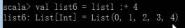
*合并连个list
怎么弄呢，如下代码：把两个集合合并成一个
++ 跟++： 一样，一个意思
还有一个相反的：
1* LIst
可变的：
*
lsit
append 添加元素

* list添加list，不能用 +=,生成新的list，要是用++=
List+ ： 注意没有 +:
*Set
Set , 直接set找不到，需要导包
这是不可变的
*定义
val set1 =HashSet(1,2,3)
Set不能+=
去重功能
对set进行相加
* 获取元素，有的话true没有的话false
2* 可变的set
1
*制定一个泛型
添加的时候不能一次性加入多个，可一次加入一个
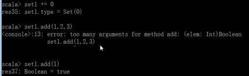
* 合并多个Set 可以看到并没有插入时候的顺序，切记
* 删除元素
* Map
导入包
*
定义一个map并且查询，添加
* 5 当天练习：
|
Scala 第二天：
1 复习：
方法吧一般不用return，一般吧最后一行的值返回，
但是val a =0 这样的赋值语句并不会返回，可以在最后一行单单写一个变量代表返回此值

循环结果集，
1. scala写一个wordcount
|
1求和、聚合、交集
*1 聚合
这个是foldLeft的简写吧，个人理解。如果我写一个累加的程序scala> (0/:(1 to 100))(_+_)res32: Int = 5050其实是等价于scala> (1 to 100).foldLeft(0)(_+_)res33: Int = 5050foldRight的简写 :\ 这个就是foldRight的简写吧，个人理解。如果我写一个递减的程序scala> ((1 to 5):\100)((i,sum)=> sum-i)res51: Int = 85
|
|
|
* 2交集、并集、差集
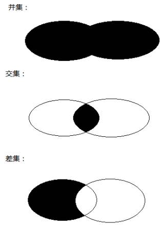
val l1 = List(5, 6, 4, 7) |
2 对象
2.1 构造器：
下面的说明有主构造器
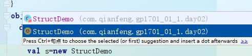
package com.qianfeng.gp1701_01_1.day02 |
*单例对象：
在Scala中没有静态方法和静态字段，但是可以使用object这个语法结构来达到同样的目的，直接就是放在内存中，但是占内存
1.存放工具方法和常量
2.高效共享单个不可变的实例
2.1.2单列设计模式：：
案列如下：
import scala.collection.mutable.ArrayBuffer } |
2.2 Appaly :方法注入方法 unapply ：提取
案例如下：
/** |
2.3 应用程序对象：
Scala程序都必须从一个对象的main方法开始，可以通过扩展App特质，不写main方法。
package com.qf.scala |
2.4 抽象类：trait
什么时候应该使用特质而不是抽象类？
如果你想定义一个类似接口的类型，你可能会在特质和抽象类之间难以取舍。这两种形式都可以让你定义一个类型的一些行为，并要求继承者定义一些其他行为。一些经验法则：
- 优先使用特质。一个类扩展多个特质是很方便的，但却只能扩展一个抽象类。
- 如果你需要构造函数参数，使用抽象类。因为抽象类可以定义带参数的构造函数，而特质不行。例如，你不能说
trait t(i: Int) {}，参数i是非法的。
override def fight = "fight with 棒子"
object ClassDemo { |
3 字符串匹配：
* 3.1 字符串匹配
import scala.util.Random |
* 3.2 数据类型匹配
import scala.util.Random |
* 3.3数组、元祖、集合，的匹配
class CaseDemoArray3 { |
* 3.4 类的匹配
import scala.util.Random |
需要注意：
*//如果前面没有继承其他类，单单实现trait 的话不能用with ，需要用extends
*Trait：特质:这里面可以多实现，trait,但是extends abstract 抽象类只可以一个
*//重写特质里面没有实现的方法时，可以不用override修饰，加了也可以
*//scala 中所有类都继承自Any
*//i -- ;i++ 在scala中没有
*class Queen private(val name: String, prop: Array[String], private var age: Int = 18){
println(prop.size)
//prop被下面的方法使用后，prop就变成了不可变得对象私有字段，等同于private[this] val prop
方法注入：
ef apply(name:String,age
:Int,faceValue:Int): ApplyDemo =new ApplyDemo(name,age,faceValue)
//提取方法
def unapply(applyDemo: ApplyDemo): Option[(String, Int, Int)] = {}
这里apply unapply 必须这样写
2.5 Option类型
在Scala中Option类型样例类用来表示可能存在或也可能不存在的值(Option的子类有Some和None)。Some包装了某个值，None表示没有值
N总结：
Array：size length 都有
Day03 Scala 学习第三天：
1. 复习
ReduceRight : 相加相减 讲错，更正
Apply方法：这里 List 没有new 及使用的伴生对象，后面加了括号，里面有参数，，就是用的伴生对象里面的apply注入方法，
注入方法的左边里面的参数，可以与主构造器里面的参数不一致，如下表红，（这时候主构造器当中只有两个参数）
class Lianxi_01 (val name:String,var age :Int){
def apply(name:String,age :Int,faceValue:Int): ApplyDemo =new ApplyDemo(name,age【，faceValue:Int】)
学习：
1.1Option类对象的学习：
1 OptionDemo.scala 对象，可能存在的对象
//在Scala中Option类型样例类用来表示可能存在或也可能不存在的值(Option的子类有Some和None)。Some包装了某个值，None表示没有值 |
1.2 PartialFunaction 类型的使用，带的参数一个是输入，一个是输出
object PartialFunctionDemo { |
1.3 scala当中的线程：基本列子
* 1.3.1 线程的集中返回值，
|
! |
发送异步消息，没有返回值。 |
|
!? |
发送同步消息，等待返回值。 |
|
!! |
发送异步消息，返回值是 Future[Any]。 |
1.3.2 今天老师的几个列子：最基本使用
import scala.actors.Actor |
|
|
1.4 线程池的初级使用1
|
1.5 scala的线程池的使用列子2
import java.util.concurrent.*; |
1.6 Mywordcount :线程跑wordcount
package com.qianfeng.gp1701_01_1.Day03.AM.Thread |
1.3.N 晚上自己练习：进程
import scala.actors.{Actor, Future}
|
|
|
2 .学习下午：
2.1 函数的小练习
* 柯里化：就是将多个参数转化成一个参数
定义形式：
可以定义初始化值，也可以把后面初始化的值进行覆盖
如果在给定一个隐士得值的话，就会再次覆盖
但是如果多次定义隐士得值的话，会报错，因为定义了多个隐士的值，所以定义一次就行了
这个是根据定义的隐士对象的类型，而不是变量名，
*
需求吧Array里面元祖的value相加
这里用了arr.reduce() 是不行的，为什么呢
如下错误：

* 这里使用ffoldLeft（） 调用-如下：
二foldLeft内部实现了克里化
*定义克里话
* 克里化方法，第一个参数列表声明空值的情况
* 总结一下克利化声明方式：两种：
第一种：
第二种：不需要用下划线转换的
* 声明空值，为1 ,但是并没有什么意义
def curry2() =() => 1
* 隐士转换：
2.2 克利化 隐式转换
/** |
2.3 Mypredef + RichFile
object MyPredef { } |
RichFile
import scala.io.Source |
2.4 Comparable[T] 比较器
class Teacher (val name:String,val faceValue:Int) extends Comparable[Teacher]{ |
继承：
通过方法的重写进行对类的增强
代理模式：代理一个实例，对实例作方法的增强，在方法之前代理，方法之后还有环绕
装饰模式：比如再用IO刘时会用到，也是对实例的方法进行增强。
比如想让FileInputStream有缓冲的作用，就应该在外面用BufferInputStream 包装一下，
new BufferinputStream(new FileInputStream) .read()
隐式转换就是用到了装饰模式
装饰模式是显示的包装
隐式转换就是隐士的做了包装
隐式转换还用到了门面模式，Predef (门面)就是一个门面
所以隐式转换就是门面模式和装饰模式
Scal的泛型：
[B < : A] UpperBound上界：B类型的上界是A类型，即B类型的父类是A类型
[B >: A ] LowerBound 下界：B类型的下界是A类型，即B类型的子类是A类型
[B < % A] ViewBound 表示B类型要转换成A类型，需要一个隐士的转换函数
[B : A] Contextbound需要一个隐士的值
[-T]:逆变，作为参数类型，如果A类是B类的子类，那么T[B] 是 T[A]的子类
[+T]:协边，作为返回类型，如果A是B的子类，那么T[A] 是 T[B]的子类
(-A，+B)
Day04 Scala第四天：
1. 开始记录
1.1 HadoopRPC ：画的一张图
RPC Akka 、Netty、Spark的关系 ，NIO
,同步非阻塞，AIO异步非阻塞
Resourcemanamger -> nodemanager (worker)->Executor
2.2 akka 图，用akka实现离线任务调用
2.3 Actor -
master actor
步骤：
|
1、Worker吧请求封装到case class 中并序列化， 发送到Master 2、Masters接受到的Workder发送的消息开始进行反序列化，然后根据模式匹配，执行相应的逻辑 3、Master把执行的结果发送给相应的workder |
2.2.1 过程中配置文件
|
<dependency>
<groupId>com.typesafe.akka</groupId>
<artifactId>akka-actor_2.10</artifactId>
<version>2.3.14</version>
</dependency>
<dependency>
<groupId>com.typesafe.akka</groupId> <artifactId>akka-remote_2.10</artifactId>
<version>2.3.14</version>
</dependency> |
|
akka.actor.provider = "akka.remote.RemoteActorRefProvider" akka.remote.netty.tcp.hostname = "$host" akka.remote.netty.tcp.port =
"$port" |
* Master:代码案例：
package com.qianfeng.gp1701_01_1.Day04.AM.AM.AkkaDemo |
* Worker:代码案例：
package com.qianfeng.gp1701_01_1.Day04.AM.AM.AkkaDemo |
2.3需求：
2. spark 的开始搭建
standalone 用得少得考虑稳定
切记：spark 1.6.1 不支持 1.6.1 以上的
3 RPC:
4. Akka实现远程代码请求

——扩展的：
RPC Akka 、Netty、Spark的关系 ，NIO
,同步非阻塞，AIO异步非阻塞
Day05 Spark
1. 复习
archive 、 列出所有的 apache的软件
Spark 、只要在slaves里面配置了，master里面同样启动worker 。
./sbin/start-slaves.sh 启动多个， start-slave.sh 需要带参数
2 . Start
2.1 Spark shell
|
sbin/spark-shell |
一个集群的入口类，很重要 sc ,已经给创建好了
第二个重要的对象
开启之后 查看进程 java的，用于提交任务的
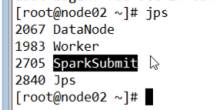
但是这样的启动只能是单机的
2.2 * 全局：
貌似上面的有问题
也可以不指定
|
./spark-shell
--master spark://hadoop01:7077 --executor-memory 512m --total-executor-cores
2 ./spark-shell --master spark://hadoop01:7077 |
Spark 换行的话用 右斜杠 \ ,可以多行进行输入
2.3 运行,提交一下任务
|
|
2.4 （提交任务）
指令 spark-submit
Spark 这个指令运行的包
计算PI
|
Bin]# ./spark-submit --class org.apache.spark.examples.SparkPi --master spark://hadoop01:7077 --executor-memory 256m --total-executor-cores 2 /export/servers/spark-1.6.1/lib/spark-examples-1.6.1-hadoop2.6.0.jar 100 如下： |
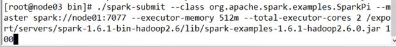
Worker 的executor进程是哪一个？？如下
3 idea中跑
3.1修改添加的配置
<dependency>
<groupId>org.apache.spark</groupId>
<artifactId>spark-core_2.10</artifactId>
<version>${spark.version}</version>
</dependency>
<dependency>
<groupId>org.apache.hadoop</groupId>
<artifactId>hadoop-client</artifactId>
<version>${hadoop.version}</version>
</dependency>
3.1 提交任务
|
./spark-shell --master spark://hadoop01:7077 --executor-memory 512m --total-executor-cores 2 |
|
./spark-submit --class com.qianfeng.gp1701_01_1.Day05.AM.SparkWc --master spark://hadoop01:7077 --executor-memory 256m --total-executor-cores 2 /home/MyStudyTest/sparkdata/wc.jar /home/MyStudyTest/sparkdata/input/wc.txt /home/MyStudyTest/sparkdata/out |
可以打个断点进行调试，
下面这个是集群跑
|
./spark-submit --class com.qianfeng.gp1701_01_1.Day05.AM.SparkWc --master spark://hadoop01:7077 --executor-memory 256m --total-executor-cores 2 /home/MyStudyTest/sparkdata/wc.jar hdfs://hadoop01:9000/words/wc.txt hdfs://hadoop01:9000/out/spart_01 |
f8 下一步 f7进入查看代码，alt+f8 详细调试
PM:
1. 老师讲解RDD :
1.1 reduceby groupby 的区别
1. 开始：
练习3
练习
4
1
*
1.2 生成RDD的两种方式：
这两种conniction 类型的，在collect之前，collect是能看结果集

默认分区器给你分成两个分区
分区练习：map循环出来每个元素 mappartitions是循环出来每个分区
*
1.3 Aggregate：
继续上面的rdd1

*
这里找最大值
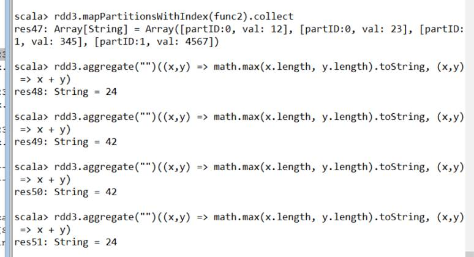
**
这里找最小值：
0 .tostring =0
Day06 spark 学习：
1复习：
跑本地的时候，必须是每个节点上都有相同的文件
|
./spark-shell --master spark://hadoop01/7077 --executor-memory 512m --total-executor-cores 1 ** /usr/local/spark-1.6.1-bin-hadoop2.6/bin/spark-shell \ --master spark://node01:7077 \ --jars /usr/local/spark-1.6.1-bin-hadoop2.6/mysql-connector-java-5.1.35-bin.jar \ --driver-class-path /usr/local/spark-1.6.1-bin-hadoop2.6/mysql-connector-java-5.1.35-bin.jar ./spark-submit --class org.apache.spark.examples.SparkPi --master spark://hadoop01:7077 --executor-memory 256m --total-executor-cores 2 /export/servers/spark-1.6.1/lib/spark-examples-1.6.1-hadoop2.6.0.jar 100
可以打个断点进行调试， 下面这个是集群跑
普通集群上的：
高可用上的：
|
2. 开始学习checkpoint
http://homepage.cs.latrobe.edu.au/zhe/ZhenHeSparkRDDAPIExamples.html
mapPartitions
mapPartitionsWithIndex
val func = (index: Int, iter: Iterator[(Int)]) => {
iter.toList.map(x => "[partID:" + index + ", val: " + x + "]").iterator
}
//定义一个fun函数,显示出来分区id，与分区的值
val func = (index: Int, iter: Iterator[(Int)]) => {
iter.toList.map(x => "[partID:" + index + ", val :" + x + "]").iterator
}
//创建一个上下文对象
val conf: SparkConf = new SparkConf().setAppName("SparkWc").setMaster("local[*]")
//创建Spark的上下文对象，也是提交任务到集群的入口类
val sc: SparkContext = new SparkContext(conf)
//parallelize创建一个的分区,两个分区
val rdd1 = sc.parallelize(List(1, 2, 3, 4, 5, 6, 7, 8, 9), 2)
//打印出来分区以及每个分区的值
//rdd1.mapPartitionsWithIndex(func).collect.foreach(println(_))
//aggregate 聚合的使用
def func1(index: Int, iter: Iterator[(Int)]): Iterator[String] = {
iter.toList.map(x => "[partID:" + index + ",val :" + x + "]").iterator
}
// val rdd1 = sc.parallelize(List(1, 2, 3, 4, 5, 6, 7, 8, 9), 2)
// rdd1.mapPartitionsWithIndex(func1).collect.foreach(println(_))
/*[partID:0, val :1]
[partID:0, val :2]
[partID:0, val :3]
[partID:0, val :4]
[partID:1, val :5]
[partID:1, val :6]
[partID:1, val :7]
[partID:1, val :8]
[partID:1, val :9]*/
//两个分区最大值进行相加
// println(rdd1.aggregate(0)(math.max(_,_), _+_))//13
//初始值是5 的两个分区的数进行相加
// println(rdd1.aggregate(5)(math.max(_,_), _+_)+"(5)")//19
//****
//分区
val rdd2 = sc.parallelize(List("a", "b", "c", "d", "e", "f"), 2)
def func2(index: Int, iter: Iterator[(String)]): Iterator[String] = {
iter.toList.map(x => "[partID:" + index + ",val :" + x + "]").iterator
}
// println(rdd2.aggregate("")(_+_,_+_))//abcde
// println(rdd2.aggregate("=")(_+_,_+_))//==def=abc
val rdd3 = sc.parallelize(List("12", "23", "345", "4567"), 2)
//查看分组
// rdd3.mapPartitionsWithIndex(func2).collect().foreach(println(_))
/* [partID:0,val :12]
[partID:0,val :23]
[partID:1,val :345]
[partID:1,val :4567]*/
val rdd3_1: String = rdd3.aggregate("")((x, y) => math.min(x.length, y.length).toString, (x, y) => x + y)
// println(rdd3_1)//11
val rdd4 = sc.parallelize(List("12", "23", "345"), 2)
val rdd4_1: String = rdd4.aggregate("")((x, y) => math.min(x.length, y.length).toString, (x, y) => x + y)
// println(rdd4_1)//10
val rdd5 = sc.parallelize(List("12", "23", "", "345", ""), 3)
val rdd5_1: String = rdd5.aggregate("")((x, y) => math.min(x.length, y.length).toString, (x, y) => x + y)
// println(rdd5_1)//000
//** aggregateByKey
val pairRDD = sc.parallelize(List(("cat", 2), ("cat", 5), ("mouse", 4), ("cat", 12), ("dog", 12), ("mouse", 2)), 2)
//列举出来分区信息的函数
def func2_1(index: Int, iter: Iterator[(String, Int)]): Iterator[String] = {
iter.toList.map(x => "[partID:" + index + "，val :" + x).iterator
}
//打印出來分區信息
// pairRDD.mapPartitionsWithIndex(func2_1).collect().foreach(println(_))
/* [partID:0，val :(cat,2)
[partID:0，val :(cat,5)
[partID:0，val :(mouse,4)
[partID:1，val :(cat,12)
[partID:1，val :(dog,12)
[partID:1，val :(mouse,2)*/
//下面这个是：
//每一分区中=按照key 得出数量最多的 ： cat 5 mouse 4 | cat 12 dog 12 mouse 2 (因为dog mouse 在分区中只有一份所以就是12,2最大了)
// pairRDD.aggregateByKey(0)(math.max(_,_),_+_).collect.foreach(println(_))
/* (dog,12)
(cat,17)
(mouse,6)*/
// pairRDD.aggregateByKey(100)(math.max(_,_),_+_).collect.foreach(println(_))
/* (dog,100)
(cat,200)
(mouse,200)*/
2.1 checkpoint
sc.setCheckpointDir("hdfs://node01:9000/ck")
val rdd = sc.textFile("hdfs://node01:9000/wc").flatMap(_.split(" ")).map((_, 1)).reduceByKey(_+_)
rdd.checkpoint
rdd.isCheckpointed
rdd.count
rdd.isCheckpointed
rdd.getCheckpointFile
-------------------------------------------------------------------------------------------
-------------------------------------------------------------------------------------------
2.2 repartition, coalesce
val rdd1 = sc.parallelize(1 to 10, 10)
Repartition(5)这个只能重新创建分区并且让一个变量去接受
val rdd2 = rdd1.coalesce(2, false)
少变多不行，貌似是false的原因，该为true就行了
rdd2.partitions.length
-------------------------------------------------------------------------------------------
-------------------------------------------------------------------------------------------
collectAsMap
val rdd = sc.parallelize(List(("a", 1), ("b", 2)))
rdd.collectAsMap
-------------------------------------------------------------------------------------------
-------------------------------------------------------------------------------------------
2.3 combineByKey
val rdd1 = sc.textFile("hdfs://node01:9000/wc").flatMap(_.split(" ")).map((_, 1))
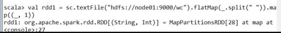
val rdd2 = rdd1.combineByKey(x => x, (a: Int, b: Int) => a + b, (m: Int, n: Int) => m + n)
rdd2.collect

val rdd3 = rdd1.combineByKey(x => x + 10, (a: Int, b: Int) => a + b, (m: Int, n: Int) => m + n)
rdd3.collect
val rdd4 = sc.parallelize(List("dog","cat","gnu","salmon","rabbit","turkey","wolf","bear","bee"), 3)
val rdd5 = sc.parallelize(List(1,1,2,2,2,1,2,2,2), 3)
val rdd6 = rdd5.zip(rdd4)
val rdd7 = rdd6.combineByKey(List(_), (x: List[String], y: String) => x :+ y, (m: List[String], n: List[String]) => m ++ n)
图解：
-------------------------------------------------------------------------------------------
-------------------------------------------------------------------------------------------
2.4 countByKey
val rdd1 = sc.parallelize(List(("a", 1), ("b", 2), ("b", 2), ("c", 2), ("c", 1)))
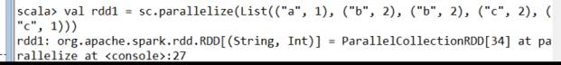
rdd1.countByKey
Value 出现的个数
rdd1.countByValue
-------------------------------------------------------------------------------------------
-------------------------------------------------------------------------------------------
2.5 filterByRange
val rdd1 = sc.parallelize(List(("e", 5), ("c", 3), ("d", 4), ("c", 2), ("a", 1)))
val rdd2 = rdd1.filterByRange("c", "d")
过滤字母a-z之间的
rdd2.colllect
-------------------------------------------------------------------------------------------
-------------------------------------------------------------------------------------------
2.6 flatMapValues
val rdd3 = sc.parallelize(List(("a", "1 2"), ("b", "3 4")))
rdd3.flatMapValues(_.split(" "))
-------------------------------------------------------------------------------------------
-------------------------------------------------------------------------------------------
2.7 foldByKey
val rdd1 = sc.parallelize(List("dog", "wolf", "cat", "bear"), 2)
val rdd2 = rdd1.map(x => (x.length, x))
val rdd3 = rdd2.foldByKey("")(_+_)
val rdd = sc.textFile("hdfs://hadoop01:9000/wc.txt").flatMap(_.split(" ")).map((_, 1))
rdd.foldByKey(0)(_+_)
-------------------------------------------------------------------------------------------
2.8 foreachPartition
val rdd1 = sc.parallelize(List(1, 2, 3, 4, 5, 6, 7, 8, 9), 3)
rdd1.foreachPartition(x => println(x.reduce(_ + _)))
-------------------------------------------------------------------------------------------
-------------------------------------------------------------------------------------------
2.9 keyBy
val rdd1 = sc.parallelize(List("dog", "salmon", "salmon", "rat", "elephant"), 3)
val rdd2 = rdd1.keyBy(_.length)
rdd2.collect
-------------------------------------------------------------------------------------------
-------------------------------------------------------------------------------------------
3.0 keys values
val rdd1 = sc.parallelize(List("dog", "tiger", "lion", "cat", "panther", "eagle"), 2)
val rdd2 = rdd1.map(x => (x.length, x))
dd2.collect
rdd2.keys.collect
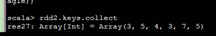
rdd2.values.collect
-------------------------------------------------------------------------------------------
-------------------------------------------------------------------------------------------
3.1 练习简单总结
|
/usr/local/spark-1.6.1-bin-hadoop2.6/bin/spark-shell \ --master spark://node01:7077 \ --jars /usr/local/spark-1.6.1-bin-hadoop2.6/mysql-connector-java-5.1.35-bin.jar \ --driver-class-path /usr/local/spark-1.6.1-bin-hadoop2.6/mysql-connector-java-5.1.35-bin.jar *** val rdd1 =sc.textFile("hdfs://hadoop01:9000/root/tmp/wc").flatMap(_.split(" ")).map((_,1)) val rdd2=rdd1.commbineByKey(x=>x,(a:Int,b:Int) => a+b ,(m:Int,n:Int)=> m +n ) scala> rdd2.collect res1: Array[(String, Int)] = Array((php,3), (python,2), ("",2), (hello,1), (java,3), (sql,1), (js,2), (html,3)) ** val rdd4 = sc.parallelize(List("dog","cat","gnu","salmon","rabbit","turkey","wolf","bear","bee"), 3) val rdd5 = sc.parallelize(List(1,1,2,2,2,1,2,2,2), 3) val rdd6=rdd5.zip(rdd4) scala> rdd6.collect res3: Array[(Int, String)] = Array((1,dog), (1,cat), (2,gnu), (2,salmon), (2,rabbit), (1,turkey), (2,wolf), (2,bear), (2,bee)) val rdd7 =rdd6.combineByKey(List(_),(x:List[String],y:String) => x:+y,(m:List[String] ,n:List[String])=>m++n) scala> rdd7.collect res6: Array[(Int, List[String])] = Array((1,List(dog, cat, turkey)), (2,List(salmon, rabbit, wolf, bear, bee, gnu))) ** val rdd1 = sc.parallelize(List(("e", 5), ("c", 3), ("d", 4), ("c", 2), ("a", 1))) val rdd2 = rdd1.filterByRange("c", "d") 过滤字母a-z之间的 ** val rdd3 = sc.parallelize(List(("a", "1 2"), ("b", "3 4"))) rdd3.flatMapValues(_.split(" ")) ** val rdd1 = sc.parallelize(List(("a", 1), ("b", 2), ("b", 2), ("c", 2), ("c", 1))) scala> rdd1.countByKey res7: scala.collection.Map[String,Long] = Map(b -> 2, a -> 1, c -> 2) scala> rdd1.countByValue res12: scala.collection.Map[(String, Int),Long] = Map((b,2) -> 2, (c,2) -> 1, (a,1) -> 1, (c,1) -> 1) ** val rdd1 =sc.parallelize(List("dog","catt","bear"),2) val rdd2=rdd1.map(x => (x.length,x)) scala> rdd2.collect res13: Array[(Int, String)] = Array((3,dog), (4,catt), (4,bear)) val rdd3 =rdd2.foldByKey("")(_+_) scala> rdd3.collect res14: Array[(Int, String)] = Array((4,cattbear), (3,dog)) ** val rdd =sc.textFile("hdfs://hadoop01:9000/root/tmp/wc").flatMap(_.split(" ")).map((_,1)) scala> rdd.collect res15: Array[(String, Int)] = Array((hello,1), (php,1), (sql,1), (java,1), (html,1), ("",1), (html,1), (html,1), (java,1), (java,1), (php,1), (php,1), (python,1), (python,1), (js,1), ("",1), (js,1)) val rdd1=rdd.foldByKey(0)(_+_) scala> rdd1.collect res18: Array[(String, Int)] = Array((php,3), (python,2), ("",2), (hello,1), (java,3), (sql,1), (js,2), (html,3)) |
3 一个需求IPSSearch
3.1 需求：计算一个人在对应的网段停留的时间，并且取前三
|
3.2 CustomerSort 两种排序方法
import org.apache.spark.rdd.RDD |
3. jdbcRDD
import java.sql.DriverManager |
3.4 AccumulatorDemo
object AccumulatorDemo { |
PM:
1. 注意：
1 导包注意
3. spark 启动流程 Spark任务提交流程
|
1、首先启动Master进程 2、Master开始解析slaves配置文件，找到启动Worker的host，然后启动相应的Worker 3、Worker开始于Master进行注册，把注册信息发送给Master 4、Master收到注册信息周，把注册信息保存到内存和磁盘里，然后Master给Worker发送注册成功的消息（masterURL) 5、Worker收到Master的URL信息后，开始于Master建立心跳 |
2.1 集群容错机制，Lineage的容错机制
4 宽窄依赖shuffele 的一个运行过程，就是有宽依赖
三个分区 留个RDD，wordcount 生成过程

一个RDD可以分为多个RDD的多个分区。只要出现一对多个分区（注意不是RDD），就是宽依赖，宽窄依赖就是判断 重新洗牌，shuffle的过程
Day07 spark学习
1. 复习
1. 重新分区
2. start study
1.Join 的宽窄依赖
没有分组的话发生的事宽依赖
分组之后发生的事窄依赖
|
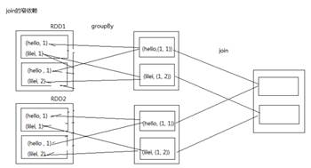 |
2. RDD缓存方式，集中缓存的级别设置
RDD 的持久化和缓存 是spark的一个特点
Off-heap ：堆外内存
堆外内存，避免被回收的风险
*2.1 根据IP 选出范围内的省份，并且导入到一张表中
//将需要广博的数据广播到集群中性赢得Executor，避免了大量的网络io提高性能
val broadcastIPInfo: Broadcast[Array[(String, String, String)]] = sc.broadcast(arrIPInfo)
代码案例
import java.sql.{Connection, Date, DriverManager, PreparedStatement} |
* 2.2 Stage划分：
Task
多少根据分区数，
插图：
|
|

2.3 RDD的生成、stage划分、任务的生成、任务的提交四个阶段，都是在Driver端，（提交的时候Excutor反向注册Driver，然后提交到服务器计算）

3 IPSearch 案例
package com.qianfeng.gp1701_01_1.Day07.AM |
PM:
1 RDD 剩余
1 . jdbcRDD
package com.qianfeng.gp1701_01_1.Day07.PM |
2. CustomerSort
package com.qianfeng.gp1701_01_1.Day07.PM |
3 Accumulator(累加器)
|
|
4. AccumulatorDemo
//三个文件。两个分区。生成6个task ， shuffer read 父RDD中的数据到到子RDD中，shuffer writer 把数据写入到磁盘中
import org.apache.spark.{Accumulable, Accumulator, SparkConf, SparkContext} //三个文件。两个分区。生成6个task ， shuffer read 父RDD中的数据到到子RDD中， shuffer writer 把数据写入到磁盘中 |
5 .task 案例
|
//reduceby并没有executor进程，并没有提交 sc.textFile("hdfs://hadoop01:9000/words/wc.txt").flatMap(_.split("")).map((_,1)).reduceBykey(_+_) //要想提交有进程 map 里面三个task sc.textFile("hdfs://hadoop01:9000/words/wc.txt").flatMap(_.split("")).map((_,1)).reduceBykey(_+_).collect storage 记录那些数据到内存 sc.textFile("hdfs://hadoop01:9000/words/wc.txt").flatMap(_.split("")).map((_,1)).reduceBykey(_+_).cache 但是上面这个然而果然是 transform 的不会提交任务，collect才会提交任务 sc.textFile("hdfs://hadoop01:9000/words/wc.txt").flatMap(_.split("")).map((_,1)).reduceBykey(_+_).cache().collect unpersist 就取消了在内存里面存数据 |
5.1 --task生成图解：
每一个stage生成一个task，每一个分区对应的下一个rdd的子分区，蓝色的pipiline，总共6个task
Task的生成会依据Stage的划分，在Stage中会首先划分piline，然后根据pipeline生成Task
Shuffle Read ：吧父RDD的数据读取到字RDD中，发生在Shuffle之后
Shuffle Write：把中间结果数据写到磁盘，为了保证数据的安全性
1、避免因为结果数据太大而占用太多的内存资源，造成内存溢出
2、保存到磁盘可以保证数据的安全性
6. 为什么要checkpoint ？
运行出的中间结果往往很重要，所以为了保证数据的安全性，要把数据做检查点，
最好吧数据checkpoint 到HDFS,便于该集群所有节点访问的到
在checkpoint之前最好先cache一下，就是先把数据缓存到内存，
这样便于运行任务是调用，也便于在checkpoint 的时候直接从缓存获取数据
7. 在什么时候做checkpoint？
在发生shuffle之后做checkpoint
Checkpoint 的步骤：
1、创建checkpoint存储目录
Sc.setCheckpointDir(“hdfs://...”) //指定到hdfs 便于其他节点方便拿到这个数据，多副本，所以存到这上面
2、把数据cache起来
rdd.cache() unpersist ()
3、checkpoint
rdd.checkpoint()
*
这里面进行shuffle
reader有时间看看
2 Spark- SQL dataframes
2.1 spark-sql 练习：
语句如下：
|
val seq1 =Seq(("1","tom",6),("2","jerry",2)) --截图 val rdd1 =sc.parallelize(seq1) val df =rdd1.toDF("id","name","age") df.show |
*
spark sql 的练习课堂练习
|
val seq1 =Seq(("1","tom",6),("2","jerry",2)) --截图 val rdd1 =sc.parallelize(seq1) val df =rdd1.toDF("id","name","age") //显示表 df.show //显示一个字段的值 df.select("name").show //显示所有值 df.select("name").show //加过滤条件 df.select("name","age").filter(col("age") > 5 ) //但是用着不顺滑 //注册成表, df.registerTemTable("t_animal") sqlContext.sql("select name,age from t_animal where age > 5 limit 10") -- res21:.... res21.show //** 第二个例子 val rdd =sc.parallelize(List((1,"tom",6),(2,"jerry",2),(3,"kitty",10)) //进行映射 val df =rdd.toDF("id","name","age") df.select("name","age").filter(col("age")< 10).show df.registerTempTable("t_animal") sqlContext.sql("select name,age from t_animal where age <10 and age > 2").show //另一种转换方式转换 datafrom val rdd =sc.parallelize(List((1,"tom",6),(2,"jerry",2),(3,"kitty",10)) val rdd =sc.textFile("hdfs://hadoop01:9000/data/person.txt") //这个类里面的信息要与person里面的信息一一对应 case class Person(id:Int,name:String,age:int，faceValue:Int) --- map flatMap 区别？？？？？？？？？？？ //一个一个加上对应 val personRDD=rdd.map(_.split(",")).map(x => Person(x(0).toInt,x(1),x(2).toInt,x(3).toInt)) val personDF=personRDD.toDF personDF.show -生成一张二维表，但是实际中用的不多 //另外一种查询方式 personDF.select("name","faceValue").show -也能查到两列值 personDF.registerTempTable("t_person") sqlContext.sql("select name,age ,faceValue from t_person where faceValue > 80 order by age desc limit 10 ").show -查到一张类似表数据 //************终结一下 spark sql 流程，很容易理解（下面语句不运行，仅总结） hdfs -> sc.textFile -> RDD -> case class Person -> rdd.map(...) -> toDF -df.registerTempTable("t_table") -> sqlContext.sql("sql...") //语句 personDF.printSchema --截图 一些简单的显示数据 sqlContext.sql("desc t_person").show |
2.1 IDEa 代码： InferSchema 通过反射推断schema
import org.apache.spark.rdd.RDD |
Day08 spark sql
1. 复习
2. StartStructTypeSchema
|
|
2.2 从MySQL中加载数据（Spark Shell方式）
1.启动Spark Shell，必须指定mysql连接驱动jar包
/usr/local/spark-1.6.1-bin-hadoop2.6/bin/spark-shell \
--master spark://node01:7077 \
--jars /usr/local/spark-1.6.1-bin-hadoop2.6/mysql-connector-java-5.1.35-bin.jar \
--driver-class-path /usr/local/spark-1.6.1-bin-hadoop2.6/mysql-connector-java-5.1.35-bin.jar
2.从mysql中加载数据
val jdbcDF = sqlContext.read.format("jdbc").options(Map("url" -> "jdbc:mysql://node03:3306/bigdata", "driver" -> "com.mysql.jdbc.Driver", "dbtable" -> "person", "user" -> "root", "password" -> "root")).load()
JdbcDF.show
2.2 代码案例1
// hadoop：core-site.xml , hive-site.xml 放入到 spark 中的conf中
注意ha 的配置 要把qf改成hadoop01:9000 ，还需要导入jar包，mysql的jar包
|
./spark-sql --master spark://hadoop01:7077 --executor-memory 521m --total-executor-cores 2 --driver-class-path /home/MyStudyTest/sparkdata/spark-sql/mysql-connector-java-5.1.35-bin.jar 进入spark-sql > 1. 操作 create table person(id int,name String,age int,fv int) row format delimited fields terminated by ','; 2 dfs -ls /usr/hive/warehouse/ |
PM：
1. Kafka：理论：
1. 消费者生产者图解：
不能同时消费
Kafka cluster : 一个segment 可以存 500G 量的数据
Comsumer Cluster :
2.Kafka集群涉及的几个问题？
|
1. Segment的概念？ 一个分区被分成相同大小的段（Segment)，每个Segment有多个索引文件（index）和数据文件（log)组成 2. 数据是怎么存储到segment中的？（数据存储机制） 1）Broker接收到数据以后，首先将数据放到操作系统的缓存里（pageche），pagecache会尽可能多的使用空闲内存 2）使用Sendfile技术尽可能多的减少操作系统和程序之间重复缓存 3）写入数据的时候使用顺序写入，写入的速度理论沙岭可以达到600M/s (平时的磁盘不是顺序写入的，所以会慢) |
3 Consumer怎么解决负载均衡：
|
1）获取Consumer消费的起始分区号 2）计算出Consumer要消费的分区数量 3）用起始分区号和分区数来取分区的范围（Hash取值） |
4 数据的分区策略
|
1）Kafka默认调用自己的分区器（DefaultPartitioner），也可以自定义的分区器,此时要实现Partition接口，重写getPartitioner方法 |
|
|
5 Kafka是怎么保证数据不丢失的？
|
Kafka接收到数据后会根据创建Topic的制定被分数来存储数据，也就是说多备份机制可以保证数据不丢失 |
2. Kafka配置：
|
这个每一个主机不能相同，要唯一 ##
consumer.properties # zookeeper连接服务器地址 zookeeper.connect=hadoop01:2181,hadoop02:2181,hadoop03:2181 ##
producer.properties #指定kafka节点列表，用于获取metadata，不必全部指定 metadata.broker.list=hadoop01:9092,hadoop02:9092 ###server.properties 1. #broker的全局唯一编号，不能重复 broker.id=0 2.指定一下存放消息存放路径 #kafka消息存放的路径 log.dirs=/export/servers/logs/kafka 3.修改集群三个地址 #broker需要使用zookeeper保存meta数据 zookeeper.connect=192.168.52.106:2181,192.168.52.107:2181,192.168.52.108:2181 4 最重要的一点，这里一定要写本机的，那个机子上的就写那个机子上的ip #此处的host.name为本机IP(重要),如果不改,则客户端会抛出:Producer connection to localhost:9092 unsuccessful 错误! host.name=hadoop01 |
|
nohup ./kafka-server-start.sh ../config/server.properties & |
3. Kafka：理论：
Day 09 (2017.10.30 周一) Storm 、
AM
1 复习
暂无
2 Spark streaming
2.1 介绍：
SparkStreaming : 是一颗祸站的，高吞吐量，实时的流式处理
可以和多个数据元进行整合
可以将数据流分批次进行处理，每一个批次就是一个时间段
DStream 是一个离散流，是SparkStreaming的基本数据抽象，它由连续的RDD构成
DStream 之间有依赖关系的
2.2 SparkStreamingWC 对DStream
进行api的操作
打印log日志：不让他显示出来，今天会有代码，记得拉过来
|
package com.qf.gp1701.day09 import org.apache.log4j.{Logger, Level} import org.apache.spark.Logging object LoggerLevels extends Logging { def setStreamingLogLevels() { val log4jInitialized = Logger.getRootLogger.getAllAppenders.hasMoreElements if (!log4jInitialized) { logInfo("Setting log level to [WARN] for streaming example." + " To override add a custom log4j.properties to the classpath.") Logger.getRootLogger.setLevel(Level.WARN) } } } |
在讲之前 讲了一个小插件，netcat 插件，linux当中的，分服务器端与客户端
SparkStreamingWC ： 先运行，然后再hadoop02 上开启 nc -lk 8888
import org.apache.spark.streaming.dstream.{DStream, ReceiverInputDStream} |
2.3 SparkStreamingACCWC对DStream
进行api的操作2
测试的时候老师把这连个给注释了，老师首这个hdfs启动不起来（不清楚暂时）

import org.apache.spark.{HashPartitioner, SparkConf} |
2. 4
LoadKafkaDataAndWC 进行数据处理
import org.apache.spark.{HashPartitioner, SparkConf} |
2.5 WindowOperationWC 窗口滑动间隔
import com.qianfeng.gp1701_01_1.Day09.AM.LoggerLevels |
PM
1 资源调度模式：
Standalone模式（不依赖于其他的调度框架）
Local 模式 （单机模式）
Spark On Yarn 模式（Spark app 运行在Yarn 资源调度框架）
Messos
Doker
这么多的资源调度框架，那种数据效率最高：Standalone模式
有了Yarn资源调度框架后，就可以在Yarn上跑
MR On Yarn
Storm On Yarn
Spark On Yarn
2 Spark-on-YARN
1. 官方文档
http://spark.apache.org/docs/latest/running-on-yarn.html
2. 配置安装
1.安装hadoop：需要安装HDFS模块和YARN模块，HDFS必须安装，spark运行时要把jar包存放到HDFS上。
2.安装Spark：解压Spark安装程序到一台服务器上，修改spark-env.sh配置文件，spark程序将作为YARN的客户端用于提交任务
export JAVA_HOME=/usr/local/jdk1.7.0_80
export HADOOP_CONF_DIR=/usr/local/hadoop-2.6.4/etc/hadoop
3.启动HDFS和YARN
hadoop-daemon.sh
start namenode
yarn-daemon.sh
start resourcemanager
3. 运行模式（cluster模式和client模式）
1.cluster模式 ,这个模式是看不到结果的 -- 这个语句任务需要在hadoop集群之外的一个节点，（节点上需要spark ， hadoop，）
./bin/spark-submit \
--class org.apache.spark.examples.SparkPi \
--master yarn \
--deploy-mode cluster \
--driver-memory 1g \
--executor-memory 1g \
--executor-cores 2 \
--queue default \
lib/spark-examples*.jar
\
2
---------------------------------------------------------------------------------------------------------------------------------
./bin/spark-submit \
--class com.qf.spark.day1.WordCount \
--master yarn \
--deploy-mode cluster \
--driver-memory 1g \
--executor-memory 1g \
--executor-cores 2 \
--queue default \
/home/bigdata/hello-spark-1.0.jar
\
hdfs://node01:9000/wc
hdfs://node01:9000/out-yarn-1
2.client模式
./bin/spark-submit \
--class org.apache.spark.examples.SparkPi \
--master yarn \
--deploy-mode client \
--driver-memory 1g \
--executor-memory 1g \
--executor-cores 2 \
--queue default \
lib/spark-examples*.jar
\
10
spark-shell必须使用client模式
./bin/spark-shell --master yarn --deploy-mode
client
3.两种模式的区别
cluster模式：Driver程序在YARN中运行，应用的运行结果不能在客户端显示，所以最好运行那些将结果最终保存在外部存储介质（如HDFS、Redis、Mysql）而非stdout输出的应用程序，客户端的终端显示的仅是作为YARN的job的简单运行状况。
client模式：Driver运行在Client上，应用程序运行结果会在客户端显示，所有适合运行结果有输出的应用程序（如spark-shell）
4.原理
cluster模式：
Spark Driver首先作为一个ApplicationMaster在YARN集群中启动，客户端提交给ResourceManager的每一个job都会在集群的NodeManager节点上分配一个唯一的ApplicationMaster，由该ApplicationMaster管理全生命周期的应用。具体过程：
1. 由client向ResourceManager提交请求，并上传jar到HDFS上
这期间包括四个步骤：
a).连接到RM
b).从RM的ASM（ApplicationsManager ）中获得metric、queue和resource等信息。
c). upload app jar and spark-assembly jar
d).设置运行环境和container上下文（launch-container.sh等脚本)
2. ResouceManager向NodeManager申请资源，创建Spark ApplicationMaster（每个SparkContext都有一个ApplicationMaster）
3. NodeManager启动ApplicationMaster，并向ResourceManager AsM注册
4. ApplicationMaster从HDFS中找到jar文件，启动SparkContext、DAGscheduler和YARN Cluster Scheduler
5. ResourceManager向ResourceManager AsM注册申请container资源
6. ResourceManager通知NodeManager分配Container，这时可以收到来自ASM关于container的报告。（每个container对应一个executor）
7. Spark ApplicationMaster直接和container（executor）进行交互，完成这个分布式任务。
client模式：
在client模式下，Driver运行在Client上，通过ApplicationMaster向RM获取资源。本地Driver负责与所有的executor container进行交互，并将最后的结果汇总。结束掉终端，相当于kill掉这个spark应用。一般来说，如果运行的结果仅仅返回到terminal上时需要配置这个。
客户端的Driver将应用提交给Yarn后，Yarn会先后启动ApplicationMaster和executor，另外ApplicationMaster和executor都 是装载在container里运行，container默认的内存是1G，ApplicationMaster分配的内存是driver- memory，executor分配的内存是executor-memory。同时，因为Driver在客户端，所以程序的运行结果可以在客户端显 示，Driver以进程名为SparkSubmit的形式存在。
4 spark 导入源码 分析
5. Spark 脚本启动流程
所以说可以单启动：
1.
2.
但比如想启动一个worker 怎么办，就在要启动的节点上单独启动
2.1
5.3接下来看人家源码里面是执行了什么 ：
----N 记录：
1 .Spark stom 区别：
Spark 模拟事实
Storm :真正的实时的
1.1 yum 配置
http://www.cnblogs.com/haoxiaoyu/p/3971363.html
2 . Spark streaming
调用spark call 里面的算子很强大
1.3 比较重要的。上个结果到下个结果
1.4
Print 打印出来结果
往其他介质存储
Day10 源码学习(radies 数据库)
AM
1 复习
2 Start，本来学源码，但是学一个数据库 redies
源码 昨天看了 worker ，Master ，继续SparkSubmit
SparkContext- 三件大事
-> env创建task
->启动TaskSehedulerImpl
-> taskScheduler.start （启动）
TaskSchedulerImpl
:
|
默认先进先出（FIFO）（FAIR是公平模式），
|
|
|
3 .创建SparkContext的时序图
4 .后端调度器创建DriverActor（负责与executor通信）和ClientActor
5 . ClientActor 向master注册
|
Spark 的任务调度方式：尽量打散 和尽量集中，系统默认是尽量打散 Driver --executor-memory 10g --total-executor-cores 10 尽量集中的方式，分配cpu 的核数 |
6 任务调度的两种方式 Worker启动Executor
找到 CoarseGrainedExecutorBackend.scala 类进行看
--》 makeOffers() //重要方法，为以后提交任务做准备，
7 Executor想DriverActor建立链接的过程
|
*sparkContext:三个工作 Sparkenv 后端调度器task scheduler tag scheduler |
8 Event loop RDD的任务提交过程
PM
1 源码：
Eventloop.scala | Thread.java | DAGScheduler.scala | TaskSchedulerImpl.scala
1. Executor启动task
2. Task任务执行流程 ---Task 分两种，如下两种 ，Executor里面的
Task.scala中
2 Application 整个过程 （非常重要）
——补充：
1--RDD : RDD 即 Resilient Distributes Dataset,
https://www.2cto.com/net/201607/529432.html
|
一：RDD粗粒度与细粒度 粗粒度： 在程序启动前就已经分配好资源(特别适用于资源特别多而且要进行资源复用) 细粒度：计算需要资源是才分配资源，细粒度没有资源浪费问题。 二： RDD 的解密： 1，分布式(擅长迭代式是spark的精髓之所在) 基于内存(有些时候也会基于硬盘) 特别适合于计算的计算框架 2，RDD代表本身要处理的数据，是一个数据集Dataset RDD本身是抽象的，对分布式计算的一种抽象 RDD 定义： 弹性分布数据集 代表一系列的数据分片 3，RDD弹性之一： 自动进行内存和磁盘数据存储的切换 RDD弹性之二：基于Lineage(血统)的高效容错： 基于DAG图，lineage是轻量级而高效的： 操作之间相互具备lineage的关系，每个操作只关心其父操作，各个分片的数据之间互不影响，出现错误的时候只要恢复单个Split的特定部分即可： 。。。。 |
RDD:博客2：
http://www.cnblogs.com/MOBIN/p/5373256.html
RDD：弹性分布式数据集，是一种特殊集合 ‚ 支持多种来源 ‚ 有容错机制 ‚ 可以被缓存 ‚ 支持并行操作，一个RDD代表一个分区里的数据集
RDD有两种操作算子：
Transformation（转换）：Transformation属于延迟计算，当一个RDD转换成另一个RDD时并没有立即进行转换，仅仅是记住了数据集的逻辑操作
Ation（执行）：触发Spark作业的运行，真正触发转换算子的计算
4.mapPartitionsWithIndex(func)
5.simple(withReplacement,fraction,seed)
10.coalesce(numPartitions，shuffle)
13.randomSplit(weight:Array[Double],seed)
基础转换操作：
1.map(func)：数据集中的每个元素经过用户自定义的函数转换形成一个新的RDD，新的RDD叫MappedRDD
（例1）
|
1 2 3 4 5 6 7 8 9 10 |
|
输出：
2 4 6 8 10 12 14 16 18 20
(RDD依赖图：红色块表示一个RDD区，黑色块表示该分区集合，下同)
2.flatMap(func):与map类似，但每个元素输入项都可以被映射到0个或多个的输出项，最终将结果”扁平化“后输出
（例2）
|
1 2 3 4 |
|
输出：
1 1 2 1 2 3 1 2 3 4 1 2 3 4 5
如果是map函数其输出如下：
Range(1) Range(1, 2) Range(1, 2, 3) Range(1, 2, 3, 4) Range(1, 2, 3, 4, 5)
(RDD依赖图)
3.mapPartitions(func):类似与map，map作用于每个分区的每个元素，但mapPartitions作用于每个分区工
func的类型：Iterator[T] => Iterator[U]
假设有N个元素，有M个分区，那么map的函数的将被调用N次,而mapPartitions被调用M次,当在映射的过程中不断的创建对象时就可以使用mapPartitions比map的效率要高很多，比如当向数据库写入数据时，如果使用map就需要为每个元素创建connection对象，但使用mapPartitions的话就需要为每个分区创建connetcion对象
(例3)：输出有女性的名字：
|
1 2 3 4 5 6 7 8 9 10 11 12 13 14 15 16 17 18 19 20 21 22 23 24 |
|
输出：
kpop lucy
其实这个效果可以用一条语句完成
|
1 |
|
之所以不那么做是为了演示函数的定义
(RDD依赖图)
4.mapPartitionsWithIndex(func):与mapPartitions类似，不同的时函数多了个分区索引的参数
func类型：(Int, Iterator[T]) => Iterator[U]
（例4）：将例3橙色的注释部分去掉即是
输出：（带了分区索引）
[0]kpop [1]lucy
5.sample(withReplacement,fraction,seed):以指定的随机种子随机抽样出数量为fraction的数据，withReplacement表示是抽出的数据是否放回，true为有放回的抽样，false为无放回的抽样
(例5)：从RDD中随机且有放回的抽出50%的数据，随机种子值为3（即可能以1 2 3的其中一个起始值）
|
1 2 3 4 5 |
|
6.union(ortherDataset):将两个RDD中的数据集进行合并，最终返回两个RDD的并集，若RDD中存在相同的元素也不会去重
|
1 2 3 4 5 6 |
|
输出：
1 2 3 3 4 5
7.intersection(otherDataset):返回两个RDD的交集
|
1 2 3 4 5 6 |
|
输出：
3 4
8.distinct([numTasks]):对RDD中的元素进行去重
|
1 2 3 4 5 |
|
输出：
1 6 9 5 2
9.cartesian(otherDataset):对两个RDD中的所有元素进行笛卡尔积操作
|
1 2 3 4 5 |
|
输出：
(1,2)(1,3)
(1,4)
(1,5)
(2,2)
(2,3)
(2,4)
(2,5)
(3,2)
(3,3)
(3,4)
(3,5)
11.repartition(numPartition):是函数coalesce(numPartition,true)的实现，效果和例9.1的coalesce(numPartition,true)的一样
12.glom():将RDD的每个分区中的类型为T的元素转换换数组Array[T]
|
1 2 3 4 5 |
|
输出：
int[] //说明RDD中的元素被转换成数组Array[Int]
13.randomSplit(weight:Array[Double],seed):根据weight权重值将一个RDD划分成多个RDD,权重越高划分得到的元素较多的几率就越大
|
1 2 3 4 5 6 7 |
|
输出：
2 43 8 91 5 6 7 10 Day11 redies 数据库
1 .复习
课程计划
1、 redis介绍
2、 redis安装（重点）
3、 redis客户端
4、 redis数据类型（重点）
5、 redis持久化
6、 redis主从复制
7、 redis集群（重点）
8、 redis集群的连接
9、 redis集群的jedis连接（重点）
redis介绍
什么是NoSql
为了解决高并发、高可扩展、高可用、大数据存储问题而产生的数据库解决方案，就是NoSql数据库。
NoSQL，泛指非关系型的数据库，NoSQL即Not-Only SQL，它可以作为关系型数据库的良好补充。但是它不能替代关系型数据库，而且它是存储在内存中，所以它的访问速度很快。
Nosql的数据库分类
n 键值(Key-Value)存储数据库
相关产品： Tokyo Cabinet/Tyrant、Redis、Voldemort、Berkeley DB
典型应用： 内容缓存，主要用于处理大量数据的高访问负载。
数据模型： 一系列键值对
优势： 快速查询
劣势： 存储的数据缺少结构化
n 列存储数据库
相关产品：Cassandra, HBase, Riak
典型应用：分布式的文件系统
数据模型：以列簇式存储，将同一列数据存在文件系统中
优势：查找速度快，可扩展性强，更容易进行分布式扩展
劣势：功能相对局限
n 文档型数据库
相关产品：CouchDB、MongoDB
典型应用：Web应用（与Key-Value类似，Value是结构化的）
数据模型： 一系列键值对
优势：数据结构要求不严格
劣势： 查询性能不高，而且缺乏统一的查询语法
n 图形(Graph)数据库
相关数据库：Neo4J、InfoGrid、Infinite Graph
典型应用：社交网络
数据模型：图结构
优势：利用图结构相关算法。
劣势：需要对整个图做计算才能得出结果，不容易做分布式的集群方案。
Redis介绍
Redis是用C语言开发的一个开源的高性能键值对（key-value）数据库。它通过提供多种键值数据类型来适应不同场景下的存储需求，目前为止Redis支持的键值数据类型如
下：
字符串类型
散列类型
列表类型
集合类型
有序集合类型。
Redis发展历史
2008年，意大利的一家创业公司Merzia推出了一款基于MySQL的网站实时统计系统LLOOGG，然而没过多久该公司的创始人 Salvatore Sanfilippo便 对MySQL的性能感到失望，于是他决定亲自为LLOOGG量身定做一个数据库，并于2009年开发完成，这个数据库就是Redis。 不过Salvatore Sanfilippo并不满足只将Redis用于LLOOGG这一款产品，而是希望更多的人使用它，于是在同一年Salvatore Sanfilippo将Redis开源发布，并开始和Redis的另一名主要的代码贡献者Pieter Noordhuis一起继续着Redis的开发，直到今天。
Salvatore Sanfilippo自己也没有想到，短短的几年时间，Redis就拥有了庞大的用户群体。Hacker News在2012年发布了一份数据库的使用情况调查，结果显示有近12%的公司在使用Redis。国内如新浪微博、街旁网、知乎网，国外如GitHub、Stack Overflow、Flickr等都是Redis的用户。
VMware公司从2010年开始赞助Redis的开发， Salvatore Sanfilippo和Pieter Noordhuis也分别在3月和5月加入VMware，全职开发Redis。
Redis应用场景
缓存（数据查询、短连接、新闻内容、商品内容等等）。（最多使用）
分布式集群架构中的session分离。
聊天室的在线好友列表。
任务队列。（秒杀、抢购、12306等等）
应用排行榜。
网站访问统计。
数据过期处理（可以精确到毫秒）
redis的特性
1、redis数据访问速度快（数据在内存中）
2、redis有数据持久化机制（持久化机制有两种：1、定期将内存数据dump到磁盘；2、aof(append only file)持久化机制——用记日志的方式记录每一条数据更新操作，一旦出现灾难事件，可以通过日志重放来恢复整个数据库）
3、redis支持集群模式（容量可以线性扩展）
4、redis相比其他缓存工具（ehcach/memcached），有一个鲜明的优势：支持丰富的数据结构
Redis安装
下载redis
官网地址：http://redis.io/
下载地址：http://download.redis.io/releases/redis-3.0.0.tar.gz
Redis安装环境
Redis安装一般会在Linux系统下进行安装，又因为redis是使用c语言开发，所以需要c语言环境。
l Linux：centOS
l VMware:10
l C语言环境：
Redis安装
第一步：在VMware中安装CentOS系统（Linux）。
第二步：在Linux系统中安装c语言环境
[root@redis01 ~]# yum install gcc-c++
第三步：将redis的源码包上传到Linux系统。
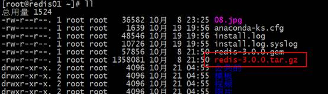
第四步：解压源码包，解压目录跟编译目录不一样的话当时我的事报错了
第五步：进入redis-3.3.3包，然后执行make命令，编译redis的源码
[root@redis01 redis-3.0.0]# make
第六步：安装
[root@redis01 redis-3.0.0]# make install PREFIX=/usr/local/redis
Redis启动
前端启动
前端启动，如果客户端关掉或者执行ctrl+c命令。则整个redis服务也停掉。
前端启动，即在客户端中执行以下命令：
[root@redis01 bin]# ./redis-server

关闭：ctrl+c
后端启动
第一步：执行cp命令将redis解压缩包中的redis.conf文件拷贝到bin目录下
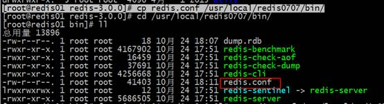
第二步：修改redis.conf文件：
第三步：启动redis服务
关闭：
正常关闭
非正常关闭
Redis客户端
Redis自带的客户端
./redis-cli –h redis数据库的ip -p 端口号
默认可以执行 ./redis-cli 此时使用默认的ip为127.0.0.1 默认的端口为 6379
Redis桌面管理工具
第一步：安装redis桌面管理工具
第二步：创建连接
界面如下：
Redis默认有16个库，这个数字可以修改。
切换库使用如下命令：
访问超时
打开防火墙
[root@redis01 ~]# vi /etc/sysconfig/iptables
# Firewall configuration written by system-config-firewall
# Manual customization of this file is not recommended.
*filter
:INPUT ACCEPT [0:0]
:FORWARD ACCEPT [0:0]
:OUTPUT ACCEPT [0:0]
-A INPUT -m state --state ESTABLISHED,RELATED -j ACCEPT
-A INPUT -p icmp -j ACCEPT
-A INPUT -i lo -j ACCEPT
-A INPUT -m state --state NEW -m tcp -p tcp --dport 22 -j ACCEPT
-A INPUT -m state --state NEW -m tcp -p tcp --dport 6379 -j
ACCEPT
-A INPUT -j REJECT --reject-with icmp-host-prohibited
-A FORWARD -j REJECT --reject-with icmp-host-prohibited
COMMIT
~
~
~
~
~
~
~
~
~
~
~
~
~
~
~
"/etc/sysconfig/iptables" 15L, 544C 已写入
[root@redis01 ~]# service iptables
restart
iptables：清除防火墙规则： [确定]
iptables：将链设置为政策 ACCEPT：filter [确定]
iptables：正在卸载模块： [确定]
iptables：应用防火墙规则： [确定]
[root@redis01 ~]#
Java客户端jedis
1.1.1 jedis介绍
Redis不仅是使用命令来操作，现在基本上主流的语言都有客户端支持，比如java、C、C#、C++、php、Node.js、Go等。
在官方网站里列一些Java的客户端，有Jedis、Redisson、Jredis、JDBC-Redis、等其中官方推荐使用Jedis和Redisson。 在企业中用的最多的就是Jedis，下面我们就重点学习下Jedis。
Jedis同样也是托管在github上，地址：https://github.com/xetorthio/jedis
环境准备及工程搭建
l Jedis
单机连接redis
连接池连接
Redis数据类型
String类型
Hash类型
List类型
Set类型
SortedSet类型
String类型
l Set
127.0.0.1:6379> set str1 angelababy
OK
l Get
127.0.0.1:6379> get str1
" angelababy"
l Del
127.0.0.1:6379> del str1
(integer) 1
l 自增
必须value为数字类型
127.0.0.1:6379> set s1 1
OK
127.0.0.1:6379> incr s1
(integer) 2
127.0.0.1:6379> incr s1
(integer) 3
127.0.0.1:6379> incr s1
(integer) 4
127.0.0.1:6379> incr s1
(integer) 5
l 自减
127.0.0.1:6379> decr s1
(integer) 4
127.0.0.1:6379> decr s1
(integer) 3
127.0.0.1:6379> decr s1
(integer) 2
127.0.0.1:6379> decr s1
l 自增自减指定数值
127.0.0.1:6379> incrby s1 3
(integer) 4
127.0.0.1:6379> decrby s1 3
(integer) 1
l 设置或者获取多个key/value
127.0.0.1:6379> mset s1 v1 s2 v2
OK
127.0.0.1:6379> mget s1 s2
1) "v1"
2) "v2"
Hash类型
1.1.2 使用string的问题
假设有User对象以JSON序列化的形式存储到Redis中，User对象有id，username、password、age、name等属性，存储的过程如下：
保存、更新：
User对象 à json(string) à redis
如果在业务上只是更新age属性，其他的属性并不做更新我应该怎么做呢？ 如果仍然采用上边的方法在传输、处理时会造成资源浪费，下边讲的hash可以很好的解决这个问题。
1.1.3 redis hash介绍
hash叫散列类型，它提供了字段和字段值的映射。字段值只能是字符串类型，不支持散列类型、集合类型等其它类型。如下：
命令
l hset
在redis中，命令是不区分大小写，但是key区分大小写
127.0.0.1:6379> hset m1 k1 v1
(integer) 1
127.0.0.1:6379> HSET m1 k1 v1
(integer) 0
l hget
127.0.0.1:6379> hget m1 k1
"v1"
127.0.0.1:6379> hget m1
(error) ERR wrong number of arguments for 'hget' command
127.0.0.1:6379>
l hdel
127.0.0.1:6379> hdel m1
(error) ERR wrong number of arguments for 'hdel' command
127.0.0.1:6379> hdel m1 k1
(integer) 1
l 同时添加或查询多个值
127.0.0.1:6379> hmset m1 k1 v1 k2 v2
OK
127.0.0.1:6379> hmget m1 k1 k2
1) "v1"
2) "v2"
127.0.0.1:6379> hmget m1 k1 k2 k3
1) "v1"
2) "v2"
3) (nil)
l 增加数值
127.0.0.1:6379> hincrby m2 k1
(error) ERR wrong number of arguments for 'hincrby' command
127.0.0.1:6379> hincrby m2 k1 2
(integer) 3
其它命令(自学)
n 判断字段是否存在
HEXISTS key field
127.0.0.1:6379> hexists user age 查看user中是否有age字段
(integer) 1
127.0.0.1:6379> hexists user name 查看user中是否有name字段
(integer) 0
HSETNX key field value
当字段不存在时赋值，类似HSET，区别在于如果字段已经存在，该命令不执行任何操作。
127.0.0.1:6379> hsetnx user age 30 如果user中没有age字段则设置age值为30，否则不做任何操作
(integer) 0
n 只获取字段名或字段值
HKEYS key
HVALS key
127.0.0.1:6379> hmset user age 20 name lisi
OK
127.0.0.1:6379> hkeys user
1) "age"
2) "name"
127.0.0.1:6379> hvals user
1) "20"
2) "lisi"
n 获取字段数量
HLEN key
127.0.0.1:6379> hlen user
(integer) 2
应用
商品id、商品名称、商品描述、商品库存、商品好评
定义商品信息的key：
商品1001的信息在 redis中的key为：items:1001
存储商品信息
192.168.101.3:7003> HMSET items:1001 id 3 name apple price 999.9
OK
获取商品信息
192.168.101.3:7003> HGET items:1001 id
"3"
192.168.101.3:7003> HGETALL items:1001
1) "id"
2) "3"
3) "name"
4) "apple"
5) "price"
6) "999.9"
List类型
List是有序可重复的集合
1.1.4ArrayList与LinkedList的区别
ArrayList使用数组方式存储数据，所以根据索引查询数据速度快，而新增或者删除元素时需要设计到位移操作，所以比较慢。
LinkedList使用双向链接方式存储数据，每个元素都记录前后元素的指针，所以插入、删除数据时只是更改前后元素的指针指向即可，速度非常快，然后通过下标查询元素时需要从头开始索引，所以比较慢，但是如果查询前几个元素或后几个元素速度比较快。
总结
arrayList在进行增删改时很麻烦
linkedList则无该问题，redis的list类型存储时采用linkedlist
redis存储list类型可以实现队列和堆栈，队列是先进先出，而堆栈是先进后出。
命令
l 从左边存值（堆栈）
127.0.0.1:6379> lpush list1 1 2 3 4 5 6
(integer) 6
l 从右边存值（队列）
127.0.0.1:6379> rpush list1 a b c d
(integer) 10
l 查看list值
127.0.0.1:6379> lrange list1 0 3
1) "6"
2) "5"
3) "4"
4) "3"
如果查看全部，使用以下命令：
127.0.0.1:6379> lrange list1 0 -1
1) "6"
2) "5"
3) "4"
4) "3"
5) "2"
6) "1"
7) "a"
8) "b"
9) "c"
10) "d"
l 从两端弹出值
127.0.0.1:6379> lpush list1 1 2 3 4 5 6
(integer) 6
127.0.0.1:6379> lrange list1 0 -1
1) "6"
2) "5"
3) "4"
4) "3"
5) "2"
6) "1"
127.0.0.1:6379> lpop list1
"6"
127.0.0.1:6379> lrange list1 0 -1
1) "5"
2) "4"
3) "3"
4) "2"
5) "1"
127.0.0.1:6379> rpop list1
"1"
127.0.0.1:6379> lrange list1 0 -1
1) "5"
2) "4"
3) "3"
4) "2"
127.0.0.1:6379>
l 获取列表的长度
127.0.0.1:6379> lrange list1 0 -1
1) "5"
2) "4"
3) "3"
4) "2"
127.0.0.1:6379> llen list1
(integer) 4
1.1.4.1 其它命令(自学)
n 删除列表中指定的值
LREM key count value
LREM命令会删除列表中前count个值为value的元素，返回实际删除的元素个数。根据count值的不同，该命令的执行方式会有所不同：
l 当count>0时， LREM会从列表左边开始删除。
l 当count<0时， LREM会从列表后边开始删除。
l 当count=0时， LREM删除所有值为value的元素。
n 获得/设置指定索引的元素值
LINDEX key index
LSET key index value
127.0.0.1:6379> lindex l:list 2
"1"
127.0.0.1:6379> lset l:list 2 2
OK
127.0.0.1:6379> lrange l:list 0 -1
1) "6"
2) "5"
3) "2"
4) "2"
n 只保留列表指定片段，指定范围和LRANGE一致
LTRIM key start stop
127.0.0.1:6379> lrange l:list 0 -1
1) "6"
2) "5"
3) "0"
4) "2"
127.0.0.1:6379> ltrim l:list 0 2
OK
127.0.0.1:6379> lrange l:list 0 -1
1) "6"
2) "5"
3) "0"
n 向列表中插入元素
LINSERT key BEFORE|AFTER pivot value
该命令首先会在列表中从左到右查找值为pivot的元素，然后根据第二个参数是BEFORE还是AFTER来决定将value插入到该元素的前面还是后面。
127.0.0.1:6379> lrange list 0 -1
1) "3"
2) "2"
3) "1"
127.0.0.1:6379> linsert list after 3 4
(integer) 4
127.0.0.1:6379> lrange list 0 -1
1) "3"
2) "4"
3) "2"
4) "1"
n 将元素从一个列表转移到另一个列表中
RPOPLPUSH source destination
127.0.0.1:6379> rpoplpush list newlist
"1"
127.0.0.1:6379> lrange newlist 0 -1
1) "1"
127.0.0.1:6379> lrange list 0 -1
1) "3"
2) "4"
3) "2"
Set类型
Set类型的数据是有序且不可重复。
命令
l 添加元素
127.0.0.1:6379> sadd set1 1 2 3 3 4 5 5
(integer) 5
l 删除元素
127.0.0.1:6379> sadd set1 1 2 3 3 4 5 5
(integer) 5
127.0.0.1:6379> srem set1 3
(integer) 1
127.0.0.1:6379> smembers set1
1) "1"
2) "2"
3) "4"
4) "5"
l 查看元素
127.0.0.1:6379> smembers set1
1) "1"
2) "2"
3) "4"
4) "5"
l 判断元素是否存在
127.0.0.1:6379> sismember set1 6
(integer) 0
运算命令
l 差集运算
127.0.0.1:6379> sadd set3 2 3 4
(integer) 3
127.0.0.1:6379> sadd set4 1 2 3
(integer) 3
127.0.0.1:6379> sdiff set4 set3
1) "1"
127.0.0.1:6379> sdiff set3 set4
1) "4"
l 交集运算
127.0.0.1:6379> sinter set3 set4
1) "2"
2) "3"
l 并集运算
127.0.0.1:6379> sunion set3 set4
1) "1"
2) "2"
3) "3"
4) "4"
1.1.5 其它命令(自学)
n 获得集合中元素的个数
SCARD key
127.0.0.1:6379> smembers setA
1) "1"
2) "2"
3) "3"
127.0.0.1:6379> scard setA
(integer) 3
从集合中弹出一个元素
SPOP key
127.0.0.1:6379> spop setA
"1“
注意：由于集合是无序的，所有SPOP命令会从集合中随机选择一个元素弹出
Sortedset类型zset
Zset在设置时，会给设置一个分数，通过分数，可以进行排序。
命令
l 添加元素
127.0.0.1:6379> zadd zset1 1 haha 2 hehe 0 heihei
(integer) 3
l 删除元素
127.0.0.1:6379> zrem zset1 haha
(integer) 1
l 获得排名在某个范围的元素列表
127.0.0.1:6379> zrange zset1 0 3
1) "heihei"
2) "hehe"
127.0.0.1:6379> zrevrange zset1 0 3
1) "hehe"
2) "heihei"
127.0.0.1:6379> zrevrange zset1 0 3 withscores
1) "hehe"
2) "2"
3) "heihei"
4) "0"
其它命令(自学)
n 获得指定分数范围的元素
ZRANGEBYSCORE key min max [WITHSCORES] [LIMIT offset count]
127.0.0.1:6379> ZRANGEBYSCORE scoreboard 90 97 WITHSCORES
1) "wangwu"
2) "94"
3) "lisi"
4) "97"
127.0.0.1:6379> ZRANGEBYSCORE scoreboard 70 100 limit 1 2
1) "wangwu"
2) "lisi"
n 增加某个元素的分数，返回值是更改后的分数。
ZINCRBY key increment member
给lisi加4分
127.0.0.1:6379> ZINCRBY scoreboard 4 lisi
"101“
n 获得集合中元素的数量
ZCARD key
127.0.0.1:6379> ZCARD scoreboard
(integer) 3
n 获得指定分数范围内的元素个数
ZCOUNT key min max
127.0.0.1:6379> ZCOUNT scoreboard 80 90
(integer) 1
n 按照排名范围删除元素
ZREMRANGEBYRANK key start stop
127.0.0.1:6379> ZREMRANGEBYRANK scoreboard 0 1
(integer) 2
127.0.0.1:6379> ZRANGE scoreboard 0 -1
1) "lisi"
ZREMRANGEBYSCORE key min max
按照分数范围删除元素
127.0.0.1:6379> zadd scoreboard 84 zhangsan
(integer) 1
127.0.0.1:6379> ZREMRANGEBYSCORE scoreboard 80 100
(integer) 1
n 获取元素的排名
ZRANK key member
ZREVRANK key member
从小到大
127.0.0.1:6379> ZRANK scoreboard lisi
(integer) 0
从大到小
127.0.0.1:6379> ZREVRANK scoreboard zhangsan
(integer) 1
1.1.6应用
1.1.6.1 商品销售排行榜
根据商品销售量对商品进行排行显示，定义sorted set集合，商品销售量为元素的分数。
定义商品销售排行榜key：items:sellsort
写入商品销售量：
商品编号1001的销量是9，商品编号1002的销量是10
192.168.101.3:7007> ZADD items:sellsort 9 1001 10 1002
商品编号1001的销量加1
192.168.101.3:7001> ZINCRBY items:sellsort 1 1001
商品销量前10名：
192.168.101.3:7001> ZRANGE items:sellsort 0 9 withscores
Keys命令
l Keys * 查看所有的key
1.2 设置key的生存时间
Redis在实际使用过程中更多的用作缓存，然而缓存的数据一般都是需要设置生存时间的，即：到期后数据销毁。
EXPIRE key seconds 设置key的生存时间（单位：秒）key在多少秒后会自动删除
TTL key 查看key剩余的生存时间
PERSIST key 清除生存时间
PEXPIRE key milliseconds 生存时间设置单位为：毫秒
例子：
192.168.101.3:7002> set test 1 设置test的值为1
OK
192.168.101.3:7002> get test 获取test的值
"1"
192.168.101.3:7002> EXPIRE test 5 设置test的生存时间为5秒
(integer) 1
192.168.101.3:7002> TTL test 查看test的生于生成时间还有1秒删除
(integer) 1
192.168.101.3:7002> TTL test
(integer) -2
192.168.101.3:7002> get test 获取test的值，已经删除
(nil)
1.3 其它命令（自学）
n keys
返回满足给定pattern 的所有key
redis 127.0.0.1:6379> keys mylist*
1) "mylist"
2) "mylist5"
3) "mylist6"
4) "mylist7"
5) "mylist8"
n exists
确认一个key 是否存在
redis 127.0.0.1:6379> exists HongWan
(integer) 0
redis 127.0.0.1:6379> exists age
(integer) 1
redis 127.0.0.1:6379>
从结果来数据库中不存在HongWan 这个key，但是age 这个key 是存在的
n del
删除一个key
redis 127.0.0.1:6379> del age
(integer) 1
redis 127.0.0.1:6379> exists age
(integer) 0
redis 127.0.0.1:6379>
从结果来数据库中不存在HongWan 这个key，但是age 这个key 是存在的
n rename
重命名key
redis 127.0.0.1:6379[1]> keys *
1) "age"
redis 127.0.0.1:6379[1]> rename age age_new
OK
redis 127.0.0.1:6379[1]> keys *
1) "age_new"
redis 127.0.0.1:6379[1]>
age 成功的被我们改名为age_new 了
n type
返回值的类型
redis 127.0.0.1:6379> type addr
string
redis 127.0.0.1:6379> type myzset2
zset
redis 127.0.0.1:6379> type mylist
list
redis 127.0.0.1:6379>
这个方法可以非常简单的判断出值的类型
redis持久化
rdb方式
RDB方式的持久化是通过快照（snapshotting）完成的，当符合一定条件时Redis会自动将内存中的数据进行快照并持久化到硬盘。
RDB是Redis默认采用的持久化方式，在redis.conf配置文件中默认有此下配置：
save 900 1
save 300 10
save 60 10000
save 开头的一行就是持久化配置，可以配置多个条件（每行配置一个条件），每个条件之间是“或”的关系，“save 900 1”表示15分钟（900秒钟）内至少1个键被更改则进行快照，“save 300 10”表示5分钟（300秒）内至少10个键被更改则进行快照。
Redis启动后会读取RDB快照文件，将数据从硬盘载入到内存。根据数据量大小与结构和服务器性能不同，这个时间也不同。通常将记录一千万个字符串类型键、大小为1GB的快照文件载入到内存中需要花费20～30秒钟。
问题总结：
通过RDB方式实现持久化，一旦Redis异常退出，就会丢失最后一次快照以后更改的所有数据。这就需要开发者根据具体的应用场合，通过组合设置自动快照条件的方式来将可能发生的数据损失控制在能够接受的范围。如果数据很重要以至于无法承受任何损失，则可以考虑使用AOF方式进行持久化。
aof方式
aof是默认不开启的，需要手动设置。
如果rdb方式和aof方式同时使用的话，那么默认从aof文件中加载数据。
redis主从复制
为了高可用，引入redis的主从复制的概念。
准备工作
完成主从复制，最少需要两台服务器，讲学方便，在一台服务器中演示即可。
但是一台服务器中需要启动两个redis
第一步：复制一个redis
[root@redis01 redis0707]# cp bin/ bin2 –r
第二步：修改端口
将bin2目录下的redis.conf文件中的端口修改为6380
主机配置
无需配置
从机配置
从机器里面配置的是主机的ip 或者主机1 的名字（master的）
port 6380
然后一定要关闭 hadoop02的客户端，然后在开启02 的客户端，（注意，02的客户端关闭的话windows上面的也访问不了，这一点要注意，我也不知道为啥，然后就行了）
从机是只读的。
关闭丛机的客户端
Redis集群
1.4 redis-cluster架构图

1、 集群通信是通过“ping-pong”机制进行通信；
2、 客户端不需要将所有的节点都连接上，只需要连接其中一个节点即可。
3、 集群中存储数据是存储到一个个的槽中，集群中槽的个数是固定的：16384，槽的编号是【0-16383】。在集群中存储数据时，会根据key进行计算，计算出一个结果，然后将这个结果和16384取余，余数就是这个key将要存储的槽的编号。
注意：槽的编号之间不能断开。
槽的计算会将数据保存的很平均，不会产生一个槽满一个槽空的情况。
1.5 redis-cluster投票:容错

什么时候整个集群不可用(cluster_state:fail)?
a:如果集群任意master挂掉,且当前master没有slave.集群进入fail状态,也可以理解成集群的slot映射[0-16383]不完成时进入fail状态..
b:如果集群超过半数以上master挂掉，无论是否有slave集群进入fail状态.
集群搭建
由于集群的脚本是用ruby语言编写的，所以需要准备ruby的环境
Ruby环境
需要ruby环境。搭建集群的脚本是ruby实现的。
redis集群管理工具redis-trib.rb依赖ruby环境，首先需要安装ruby环境：
安装ruby
yum install -y ruby
yum install -y rubygems
安装ruby和redis的接口程序
拷贝redis-3.0.0.gem至/usr/local下
执行：
gem install /usr/local/redis-3.0.0.gem
机器准备
集群环境最少要三台机器（master），每个主机都需要配置一个从机。即总共需要6台机器。
相当于在/usr/local/下面创建了一个rediscluster 文件夹，再次文件夹下面赋值（就是安装好的redis文件夹里面只有一个bin的那个文件夹，注意在这里是单机版的，如果以后真正的是redis集群的话，那么端口不能改变，只改变ip就行了）
注意到时候会报错：原因就是其他节点上面的每一个redis文件夹里面都需要删除一些东西
删东西之前需要先关闭，你之前启动的那个start-all。Sh那个脚本
6台机器的端口号如下：
7001
7002
7003
7004
7005
7006
第一步：拷贝出6个目录（拷贝的节点上不能有数据，）
[root@redis01 redis-cluster]# cp redis01/ redis02 -r
[root@redis01 redis-cluster]# cp redis01/ redis03 -r
[root@redis01 redis-cluster]# cp redis01/ redis04 -r
[root@redis01 redis-cluster]# cp redis01/ redis05 -r
[root@redis01 redis-cluster]# cp redis01/ redis06 -r
[root@redis01 redis-cluster]# ll
总用量 24
drwxr-xr-x. 2 root root 4096 10月 25 00:28 redis01
drwxr-xr-x. 2 root root 4096 10月 25 00:29 redis02
drwxr-xr-x. 2 root root 4096 10月 25 00:29 redis03
drwxr-xr-x. 2 root root 4096 10月 25 00:29 redis04
drwxr-xr-x. 2 root root 4096 10月 25 00:29 redis05
drwxr-xr-x. 2 root root 4096 10月 25 00:29 redis06
第二步：修改端口
第三步：修改配置，配置允许集群的配置
将cluster-enable 的值改为yes
第四步：启动6台redis
[root@redis01
redis-cluster]# vi start-all.sh
1 cd redis01
2 ./redis-server
redis.conf
3 cd ..
4 cd redis02
5 ./redis-server
redis.conf
6 cd ..
7 cd redis03
8 ./redis-server
redis.conf
9 cd ..
10 cd redis04
11 ./redis-server
redis.conf
12 cd ..
13 cd redis05
14 ./redis-server
redis.conf
15 cd ..
16 cd redis06
17 ./redis-server
redis.conf
"start-all.sh"
[新]
35L, 270C 已写入
[root@redis01
redis-cluster]# ll
总用量 28
drwxr-xr-x.
2 root root 4096 10月 25 00:33 redis01
drwxr-xr-x.
2 root root 4096 10月 25 00:35 redis02
drwxr-xr-x.
2 root root 4096 10月 25 00:34 redis03
drwxr-xr-x.
2 root root 4096 10月 25 00:34 redis04
drwxr-xr-x.
2 root root 4096 10月 25 00:34 redis05
drwxr-xr-x.
2 root root 4096 10月 25 00:34 redis06
-rw-r--r--.
1 root root 270
10月
25 00:37 start-all.sh
[root@redis01
redis-cluster]# ./start-all.sh
-bash:
./start-all.sh: 权限不够
[root@redis01
redis-cluster]# chmod 777 start-all.sh
[root@redis01
redis-cluster]# ll
总用量 28
drwxr-xr-x.
2 root root 4096 10月 25 00:33 redis01
drwxr-xr-x.
2 root root 4096 10月 25 00:35 redis02
drwxr-xr-x.
2 root root 4096 10月 25 00:34 redis03
drwxr-xr-x.
2 root root 4096 10月 25 00:34 redis04
drwxr-xr-x.
2 root root 4096 10月 25 00:34 redis05
drwxr-xr-x.
2 root root 4096 10月 25 00:34 redis06
-rwxrwxrwx.
1 root root 270
10月
25 00:37 start-all.sh
[root@redis01
redis-cluster]# ./start-all.sh
看到以下信息，则说明启动成功
第五步：集群
将redis-trib.rb文件复制到redis0707目录下
执行命令
|
./redis-trib.rb
create --replicas 1 127.0.0.1:7001 127.0.0.1:7002 127.0.0.1:7003
127.0.0.1:7004 127.0.0.1:7005 127.0.0.1:7006 |
|
[root@redis01 redis0707]# ./redis-trib.rb create --replicas 1 127.0.0.1:7001
127.0.0.1:7002 127.0.0.1:7003 127.0.0.1:7004 127.0.0.1:7005 127.0.0.1:7006 >>> Creating cluster Connecting to node
127.0.0.1:7001: OK Connecting to node
127.0.0.1:7002: OK Connecting to node
127.0.0.1:7003: OK Connecting to node
127.0.0.1:7004: OK Connecting to node
127.0.0.1:7005: OK Connecting to node
127.0.0.1:7006: OK >>> Performing hash
slots allocation on 6 nodes... Using 3 masters: 127.0.0.1:7001 127.0.0.1:7002 127.0.0.1:7003 Adding replica 127.0.0.1:7004
to 127.0.0.1:7001 Adding replica 127.0.0.1:7005
to 127.0.0.1:7002 Adding replica 127.0.0.1:7006
to 127.0.0.1:7003 M:
e2669f9cef230acfe90f01e207a0d410a6dbb489 127.0.0.1:7001 slots:0-5460 (5461 slots) master M: f8cf8ced81e5a111181d13ee8206dd39b3f46db4
127.0.0.1:7002 slots:5461-10922 (5462 slots) master M:
c4e8a6615f4e8b2ba408207ac9a16de9af848420 127.0.0.1:7003 slots:10923-16383 (5461 slots) master S:
95a979b999f9cb7071763370f0c2a275abeabca9 127.0.0.1:7004 replicates
e2669f9cef230acfe90f01e207a0d410a6dbb489 S:
2e40daf6cc502ca175115f92393ebc258818efe8 127.0.0.1:7005 replicates
f8cf8ced81e5a111181d13ee8206dd39b3f46db4 S:
d92e6a23ffadc2aa0f8d8b34ddc61f4c0ae29412 127.0.0.1:7006 replicates
c4e8a6615f4e8b2ba408207ac9a16de9af848420 Can I set the above
configuration? (type 'yes' to accept): yes >>> Nodes
configuration updated >>> Assign a different
config epoch to each node >>> Sending CLUSTER
MEET messages to join the cluster Waiting for the cluster to
join...... >>> Performing Cluster
Check (using node 127.0.0.1:7001) M:
e2669f9cef230acfe90f01e207a0d410a6dbb489 127.0.0.1:7001 slots:0-5460 (5461 slots) master M:
f8cf8ced81e5a111181d13ee8206dd39b3f46db4 127.0.0.1:7002 slots:5461-10922 (5462 slots) master M:
c4e8a6615f4e8b2ba408207ac9a16de9af848420 127.0.0.1:7003 slots:10923-16383 (5461 slots) master M:
95a979b999f9cb7071763370f0c2a275abeabca9 127.0.0.1:7004 slots: (0 slots) master replicates e2669f9cef230acfe90f01e207a0d410a6dbb489 M:
2e40daf6cc502ca175115f92393ebc258818efe8 127.0.0.1:7005 slots: (0 slots) master replicates
f8cf8ced81e5a111181d13ee8206dd39b3f46db4 M:
d92e6a23ffadc2aa0f8d8b34ddc61f4c0ae29412 127.0.0.1:7006 slots: (0 slots) master replicates c4e8a6615f4e8b2ba408207ac9a16de9af848420 [OK] All nodes agree about
slots configuration. >>> Check for open
slots... >>> Check slots
coverage... [OK]
All 16384 slots covered. |
连接集群
[root@redis01 bin]# ./redis-cli -p 7001 -c
127.0.0.1:7001> set s1 111
-> Redirected to slot [15224] located at 127.0.0.1:7003
OK
127.0.0.1:7003> get s1
"111"
127.0.0.1:7003> set s2 222
-> Redirected to slot [2843] located at 127.0.0.1:7001
OK
查看集群信息
节点扩展（自学）
添加主节点
集群创建成功后可以向集群中添加节点，下面是添加一个master主节点
添加7007结点，参考集群结点规划章节添加一个“7007”目录作为新节点。
执行下边命令：
./redis-trib.rb add-node 192.168.101.3:7007 192.168.101.3:7001
查看集群结点发现7007已添加到集群中：
1.5.1.1 hash槽重新分配
添加完主节点需要对主节点进行hash槽分配这样该主节才可以存储数据。
redis集群有16384个槽，集群中的每个结点分配自已槽，通过查看集群结点可以看到槽占用情况。
给刚添加的7007结点分配槽：
第一步：连接上集群
./redis-trib.rb reshard 192.168.101.3:7001（连接集群中任意一个可用结点都行）
第二步：输入要分配的槽数量
输入 500表示要分配500个槽
第三步：输入接收槽的结点id
这里准备给7007分配槽，通过cluster nodes查看7007结点id为15b809eadae88955e36bcdbb8144f61bbbaf38fb
输入：15b809eadae88955e36bcdbb8144f61bbbaf38fb
第四步：输入源结点id
这里输入all
第五步：输入yes开始移动槽到目标结点id
添加从节点
集群创建成功后可以向集群中添加节点，下面是添加一个slave从节点。
添加7008从结点，将7008作为7007的从结点。
./redis-trib.rb add-node --slave --master-id 主节点id 添加节点的ip和端口 集群中已存在节点ip和端口
执行如下命令：
./redis-trib.rb add-node --slave --master-id cad9f7413ec6842c971dbcc2c48b4ca959eb5db4 192.168.101.3:7008 192.168.101.3:7001
cad9f7413ec6842c971dbcc2c48b4ca959eb5db4 是7007结点的id，可通过cluster nodes查看。
注意：如果原来该结点在集群中的配置信息已经生成cluster-config-file指定的配置文件中（如果cluster-config-file没有指定则默认为nodes.conf），这时可能会报错：
[ERR]
Node XXXXXX is not empty. Either the node already knows other nodes (check with
CLUSTER NODES) or contains some key in database 0
解决方法是删除生成的配置文件nodes.conf，删除后再执行./redis-trib.rb add-node指令
查看集群中的结点，刚添加的7008为7007的从节点：
删除结点：
./redis-trib.rb del-node 127.0.0.1:7005 4b45eb75c8b428fbd77ab979b85080146a9bc017
删除已经占有hash槽的结点会失败，报错如下：
[ERR] Node 127.0.0.1:7005 is not empty! Reshard data away and try again.
需要将该结点占用的hash槽分配出去（参考hash槽重新分配章节）。
Jedis连接集群
|
public static void main(String[]
args) { |
API 练习：
——N 补充
1 .OneNote
https://www.zhihu.com/question/21928562
2 注意配置集群：
3 这个持久化模式要关了，不关的时候启动集群失败，可以启动之后再开启，配置完之后注意重启服务
Day 12 接近项目
1 讲解日志搜集
项目业务实现流程？
1、提出需求（多部门参与）
2、需求分析（需求调研）（公司的部门内和需求方（甲方））
3、技术选型（研发部门内）
4、技术可行性分析（预研工作）
5、指标分析（需求到指标的转换）
6、数据的采集、清洗、存储（源数据）
---考虑和解决最多的问题就是数据对接的问题
7、数据分析（把各个指标转换成代码）
8、结果数据的存储
9、展示（运营）
2 ELK简单讲解：
ELK技术栈：数据Elastic公司
E:ElasticSearch(ES) 主要是用来做数据存储和检索，实现语言：java 是开源免费的，
L:Logstash 数据采集 实现语言： JRuby （一款小众语言，也是用的JVM,好多大数据里面用小众语言很多），开源免费
K:Kibana 数据展示 实现语言：JavaScript和（前端的能访问数据库的技术）少量的java 语言 ， 不开源，部分功能免费，不过这部分的也够用开发了
-> Echarts 目前3.0 了做前面的效果
3 Logstash（2.3.1 比较稳定，71Mb） 与flum
Logstash:
安装包体积小而且搭建方便，配置简单，有数据清洗过滤功能，通过Filter组件可以实现数据的清洗
与ES无缝结合
可以容错：断点续传的功能
主要用于获取日志数据
Flume:
在高可用方面是优于Logstash的
Flume比较看重的是数据传输的安全性，在数据传输的过程中通过事务控制
多数用于多类型数据的获取
组件：
Logstash :input -> filter ->output
Input :监控http 、心跳功能、监控hbase ，mysql，github
Output:以任何形式将数据输出出去
Flueme : source -> channel -> sink
PM
1 .开启kafka ，先开启zookeeper
开启 kfaka ：
ZkServer.sh start
nohup ./kafka-server-start.sh ../config/server.properties &
* 自己也需要创建一个conf 目录，在创建一个 logstash-kafka.conf 文件在里面写入
|
vi logstash-kafka.conf input { file { path => "/home/tmp/spark/logstash/test.log” //下面是多少秒访问一次这个文件夹 discover_interval => 5 //从最后读取，下面定义的是从那里读取 start_position => "beginning" } } output { kafka { topic_id => "test1" codec => plain { format => "%{message}" charset => "UTF-8" } bootstrap_servers => "node01:9092,node02:9092,node03:9092" } } #启动logstash bin/logstash -f logstash-kafka.conf 然后每一个节点都启动消费者： 查看有多少个topci bin/kafka-topics.sh --list --zookeeper localhost:2181 描述topicbin/kafka-topics.sh --describe --zookeeper localhost:2181 --topic my-replicated-topic 生产者： bin/kafka-console-producer.sh --broker-list hadoop01:9092 --topic test1 消费者： bin/kafka-console-consumer.sh --zookeeper hadoop01:2181 --from-beginning --topic test1 |
Kafka常见命令：
启动zookeeperbin/zookeeper-server-start.sh config/zookeeper.properties & 启动kafkabin/kafka-server-start.sh config/server.properties & 停止kafkabin/kafka-server-stop.sh 停止zookeeperbin/zookeeper-server-stop.sh 创建topicbin/kafka-topics.sh --create --zookeeper localhost:2181 --replication-factor 1 --partitions 1 --topic test 展示topicbin/kafka-topics.sh --list --zookeeper localhost:2181 描述topicbin/kafka-topics.sh --describe --zookeeper localhost:2181 --topic my-replicated-topic 生产者：bin/kafka-console-producer.sh --broker-list 130.51.23.95:9092 --topic my-replicated-topic 消费者：bin/kafka-console-consumer.sh --zookeeper 130.51.23.95:2181 --topic test --from-beginnin
|
l 查看当前服务器中的所有topic
bin/kafka-topics.sh --list --zookeeper hadoop01:2181
l 创建topic
bin/kafka-topics.sh --create --zookeeper node01:2181 --replication-factor 1 --partitions 1 --topic test
l 删除topic
bin/kafka-topics.sh --delete --zookeeper node01:2181 --topic test
需要server.properties中设置delete.topic.enable=true否则只是标记删除或者直接重启。
l 通过shell命令发送消息
bin/kafka-console-producer.sh --broker-list hadoop01:9092 --topic test1
l 通过shell消费消息
bin/kafka-console-consumer.sh --zookeeper hadoop01:2181 --from-beginning --topic test1
l 查看消费位置
bin/kafka-run-class.sh kafka.tools.ConsumerOffsetChecker –zookeeper hadoop01:2181 --group testGroup
l 查看某个Topic的详情
bin/kafka-topics.sh --topic test --describe --zookeeper node01:2181
l 对分区数进行修改
bin/kafka-topics.sh --zookeeper node01 --alter --partitions 15 --topic utopic
3.1 老师给的安装笔记
|
https://www.elastic.co/guide/en/logstash/current/index.html 首先下载logstash，上传到服务器 logstash是用JRuby语言开发的，所以要安装JDK 解压： tar -zxvf logstash-2.3.1.tar.gz -C /bigdata/ 启动： bin/logstash -e 'input { stdin {} } output { stdout{} }' //rubydebug方式输出 bin/logstash -e 'input { stdin {} } output { stdout{codec => rubydebug} }' bin/logstash -e 'input { stdin {} } output { elasticsearch {hosts => ["192.168.88.211:9200"]} stdout{} }' bin/logstash -e 'input { stdin {} } output { elasticsearch {hosts => ["192.168.88.212:9200", "192.168.88.213:9200"]} stdout{} }' bin/logstash -e 'input { stdin {} } output { kafka { topic_id => "test1" bootstrap_servers => "192.168.88.81:9092,192.168.88.82:9092,192.168.88.83:9092"} stdout{codec => rubydebug} }' ============================================================================================ 以配置的形式； vi logstash-kafka.conf input { file { path => "/root/data/test.log" discover_interval => 5 start_position => "beginning" } } output { kafka { topic_id => "test1" codec => plain { format => "%{message}" charset => "UTF-8" } bootstrap_servers => "node01:9092,node02:9092,node03:9092" } } #启动logstash bin/logstash -f logstash-kafka.conf ------------------------------------------------ vi logstash-es.conf input { file { type => "gamelog" path => "/log/*/*.log" discover_interval => 10 start_position => "beginning" } } output { elasticsearch { index => "gamelog-%{+YYYY.MM.dd}" hosts => ["node01:9200", "node02:9200", "node03:9200"] } } #启动logstash bin/logstash -f logstash.conf bin/logstash -e ' input { stdin {} } filter { grok { match => { "message" => "%{IP:client} %{WORD:method} %{URIPATHPARAM:request} %{NUMBER:bytes} %{NUMBER:duration}" } } } output { stdout{codec => rubydebug} }' |
1 配置elasticsearch
http://www.elastic.co/guide/en/elasticsearch/reference/current/setup-configuration.html
https://github.com/elastic/elasticsearch
###【在多台机器上执行下面的命令】###
#es启动时需要使用非root用户，所以创建一个bigdata用户：
useradd bigdata
#为bigdata用户添加密码：
echo 123456 | passwd --stdin bigdata
#将bigdata添加到sudoers
echo "bigdata ALL = (root) NOPASSWD:ALL" | tee /etc/sudoers.d/bigdata
chmod 0440 /etc/sudoers.d/bigdata
#解决sudo: sorry, you must have a tty to run sudo问题，在/etc/sudoers注释掉 Default requiretty 一行
sudo sed -i 's/Defaults requiretty/Defaults:bigdata !requiretty/' /etc/sudoers
#切换用户
su - bigdata
#创建一个bigdata目录
--创建bigdata用户之后不需要创建bigdata文件夹，在/home/下面创建的bigdata ，/home下面有bigdata的话就不需要 bigdata 文件夹
mkdir /{bigdata,data}
#给相应的目录添加权限
chown -R bigdata:bigdata {bigdata,data}
-------------------------------------------------------------------------------------------------
We recommend installing the Java 8 update 20 or later, or Java 7 update 55 or later.
Previous versions of Java 7 are known to have bugs that can cause index corruption and data loss.
Elasticsearch will refuse to start if a known-bad version of Java is used.
###【切换到bigdata用户安装，这里一定要注意是bigdata用户】###
1.安装jdk（jdk要求1.8.20或1.7.55以上）
2.上传es安装包
3.解压es 解压到/home/bigdata里面
tar -zxvf elasticsearch-2.3.1.tar.gz -C /home/bigdata/
4.elasticsearch-2.3.1目录下创建plugins文件夹并添加权限
mkdir /home/elasticsearch/plugins
chown -R bigdata:bigdata plugins (如果目录的所有者是bigdata的话，就不需要这一步了修改所有者)
5.安装plugin插件
--进入/home/bigdata/elasticsearch-2.3.1/bin里面 执行下面的 plugin文件
/bigdata/elasticsearch-2.3.1/bin/plugin install mobz/elasticsearch-head
4.修改配置
vi /bigdata/elasticsearch-2.3.1/config/elasticsearch.yml
#集群名称，通过组播的方式通信，通过名称判断属于哪个集群
cluster.name: bigdata
#节点名称，要唯一
node.name: es-1
#数据存放位置
path.data: /data/es/data
#日志存放位置
path.logs: /data/es/logs
#es绑定的ip地址
network.host: 192.168.111.123
#初始化时可进行选举的节点
discovery.zen.ping.unicast.hosts: ["hadoop01", "hadoop02", "hadoop03"]
4.5 再次安装一个插件
#es安装插件下载es插件（联网的方式）
/bigdata/elasticsearch-2.3.1/bin/plugin install mobz/elasticsearch-head
#本地方式安装head插件（本地有zip 这个压缩文件可以这样安装）
./plugin install file:///mnt/hgfs/G_MyIso/MylinuxSource/logstash/elasticsearch-head-master.zip
************
5.使用scp拷贝到其他节点
复制到其他节点上之前也需要创建 用户 bigdata 否则创建之后每个节点上没有办法创建 bigdata文件夹。
复制之前注意其他节点上面是bigdata用户创建的时候有的bigdata
下面进入 cd /home/bigdata/ 下面有 elasticsearch-2.3.1 ,注意用户所有者
scp -r ./elasticsearch-2.3.1 hadoop03:$PWD （注意这里的复制，需要带最上面的文件夹也复制）这里的当前路径就是 /home/bigdata/
scp -r ./elasticsearch-2.3.1 hadoop02:$PWD
复制完之后看一下
6.在其他节点上修改es配置，需要修改的有node.name和network.host
7.启动es（/bigdata/elasticsearch-2.3.1/bin/elasticsearch -h查看帮助文档）
//这里 -d 是后台启动。注意是bigdata用户下启动
//下面这个是在home下面
home #]./bigdata/elasticsearch-2.3.1/bin/elasticsearch -d
8.用浏览器访问es所在机器的9200端口
http://192.168.88.81:9200/
{
"name" : "es-1",
"cluster_name" : "bigdata",
"version" : {
"number" : "2.3.1",
"build_hash" : "bd980929010aef404e7cb0843e61d0665269fc39",
"build_timestamp" : "816-04-04T12:25:05Z",
"build_snapshot" : false,
"lucene_version" : "5.5.0"
},
"tagline" : "You Know, for Search"
}
或者直接杀死elasticsearch 线程服务也是可以的
kill `ps -ef | grep Elasticsearch | grep -v grep | awk '{print $2}'`
------------------------------------------------------------------------------------------------------------------
## 一下访问_plugin/head 页面的话需要下面的，我把下面的这个放到scp 之前，要不还得在每个节点上进行安装
#es安装插件下载es插件
/bigdata/elasticsearch-2.3.1/bin/plugin install mobz/elasticsearch-head
#本地方式安装head插件
./plugin install file:///home/bigdata/elasticsearch-head-master.zip
./plugin install file:///mnt/hgfs/G_MyIso/MylinuxSource/logstash/elasticsearch-head-master.zip
#访问head管理页面
http://192.168.111.123:9200/_plugin/head
RESTful接口URL的格式：
http://localhost:9200/<index>/<type>/[<id>]
其中index、type是必须提供的。--->index相当于关系型数据库的dababase,type相当于table
id是可选的，不提供es会自动生成。
index、type将信息进行分层，利于管理。
index可以理解为数据库；type理解为数据表；id相当于数据库表中记录的主键，是唯一的。
#向store索引中添加一些书籍
curl -XPUT 'http://192.168.111.123:9200/store/books/1' -d '{
"title": "Elasticsearch: The Definitive Guide",
"name" : {
"first" : "Zachary",
"last" : "Tong"
},
"publish_date":"2015-02-06",
"price":"49.99"
}'
#通过浏览器查询
http://192.168.111.123:9200/store/books/1
#在linux中通过curl的方式查询
curl -XGET 'http://192.168.111.123:9200/store/books/1'
#再添加一本书的信息
curl -XPUT 'http://192.168.111.123:9200/store/books/2' -d '{
"title": "Elasticsearch Blueprints",
"name" : {
"first" : "Vineeth",
"last" : "Mohan"
},
"publish_date":"2015-06-06",
"price":"35.99"
}'
# 通过ID获得文档信息
curl -XGET 'http://192.168.111.123:9200/store/books/2'
#在浏览器中查看
http://192.168.111.123:9200/bookstore/books/1
# 通过_source获取指定的字段
curl -XGET 'http://192.168.111.123:9200/store/books/1?_source=title'
curl -XGET 'http://192.168.111.123:9200/store/books/1?_source=title,price'
curl -XGET 'http://192.168.111.123:9200/store/books/1?_source'
#可以通过覆盖的方式更新
curl -XPUT 'http://192.168.88.81:9200/store/books/1' -d '{
"title": "Elasticsearch: The Definitive Guide",
"name" : {
"first" : "Zachary",
"last" : "Tong"
},
"publish_date":"2016-02-06",
"price":"99.99"
}'
# 或者通过 _update API的方式单独更新你想要更新的
curl -XPOST 'http://192.168.88.81:9200/store/books/1/_update' -d '{
"doc": {
"price" : 88.88
}
}'
curl -XGET 'http://192.168.88.81:9200/store/books/1'
#删除一个文档
curl -XDELETE 'http://192.168.88.81:9200/store/books/1'
# 最简单filter查询
# SELECT * FROM books WHERE price = 35.99
# filtered 查询价格是35.99的
curl -XGET 'http://192.168.88.81:9200/store/books/_search' -d '{
"query" : {
"filtered" : {
"query" : {
"match_all" : {}
},
"filter" : {
"term" : {
"price" : 35.99
}
}
}
}
}'
#指定多个值
curl -XGET 'http://192.168.111.123:9200/store/books/_search' -d '{
"query" : {
"filtered" : {
"filter" : {
"terms" : {
"price" : [35.99, 49.99]
}
}
}
}
}'
# SELECT * FROM books WHERE publish_date = "2015-02-06"
curl -XGET 'http://192.168.88.81:9200/store/books/_search' -d '{
"query" : {
"filtered" : {
"filter" : {
"term" : {
"publish_date" : "2015-06-06"
}
}
}
}
}'
# bool过滤查询，可以做组合过滤查询
# SELECT * FROM books WHERE (price = 35.99 OR price = 99.99) AND (publish_date != "2016-02-06")
# 类似的，Elasticsearch也有 and, or, not这样的组合条件的查询方式
# 格式如下：
# {
# "bool" : {
# "must" : [],
# "should" : [],
# "must_not" : [],
# }
# }
#
# must: 条件必须满足，相当于 and
# should: 条件可以满足也可以不满足，相当于 or
# must_not: 条件不需要满足，相当于 not
curl -XGET 'http://192.168.88.81:9200/store/books/_search' -d '{
"query" : {
"filtered" : {
"filter" : {
"bool" : {
"should" : [
{ "term" : {"price" : 35.99}},
{ "term" : {"price" : 49.99}}
],
"must_not" : {
"term" : {"publish_date" : "2015-02-06"}
}
}
}
}
}
}'
# 嵌套查询
# SELECT * FROM books WHERE price = 35.99 OR ( publish_date = "2015-02-06" AND price = 49.99 )
curl -XGET 'http://192.168.88.81:9200/store/books/_search' -d '{
"query" : {
"filtered" : {
"filter" : {
"bool" : {
"should" : [
{ "term" : {"price" : 35.99}},
{ "bool" : {
"must" : [
{"term" : {"publish_date" : "2015-02-06"}},
{"term" : {"price" : 49.99}}
]
}}
]
}
}
}
}
}'
# range范围过滤
# SELECT * FROM books WHERE price >= 20 AND price < 100
# gt : > 大于
# lt : < 小于
# gte : >= 大于等于
# lte : <= 小于等于
curl -XGET 'http://192.168.88.81:9200/store/books/_search' -d '{
"query" : {
"filtered" : {
"filter" : {
"range" : {
"price" : {
"gt" : 20.0,
"lt" : 100
}
}
}
}
}
}'
# 另外一种 and， or， not查询
# 没有bool, 直接使用and , or , not
# 注意: 不带bool的这种查询不能利用缓存
# 查询价格既是35.99，publish_date又为"815-02-06"的结果
curl -XGET 'http://192.168.88.81:9200/store/books/_search' -d '{
"query": {
"filtered": {
"filter": {
"and": [
{
"term": {
"price":49.99
}
},
{
"term": {
"publish_date":"2015-02-06"
}
}
]
},
"query": {
"match_all": {}
}
}
}
}'
http://192.168.88.81:9200/bookstore/books/_search
#es安装插件下载es插件
/bigdata/elasticsearch-2.3.1/bin/plugin install elasticsearch/marvel/latest
#访问head管理页面
http://192.168.88.81:9200/_plugin/marvel
配置好之后启动：
不要看进程都没了。其实是有的，在开一个窗口就能看进程了，这里不用过多看
副本数 1 —》 2 ,3->4
分骗术3
2 elasticsearch 页面查看
五角星的被选为主
创建的时候分区 三个，副本1 个，那么创建之后就是 给你三个分区，然后带上副本总共有两个
_index 就相当于数据库
_type 就相当于数据表
_id 就相当于主键
_score 就相当于字段可以有多个
在比较大小的期间 是按照字符串进行比较的
好像是每一个子进行比较，比如第一个比较第一个，第二个比较第二个
API
1 测试连接 Elasticserach 实例：
import org.apache.spark.rdd.RDD |
|
<dependency> <groupId>org.elasticsearch</groupId> <artifactId>elasticsearch</artifactId> <version>2.3.1</version> </dependency> <dependency> <groupId>org.elasticsearch</groupId> <artifactId>elasticsearch-spark_2.10</artifactId> <version>2.3.1</version> </dependency> |
Day13
Node1 数据-kafka
Node2 kafka -elasticsearch